Web3 工程师学习指南
DeFi 协议工程
AMM、借贷、稳定币、MEV、LST/LRT
Web3 Engineer Guide
版本 V1.0 · 2026.05
供个人学习使用 · MIT License
读者：刚学完基础 Solidity 的 Web2 工程师，没碰过 DeFi。读完主线（约 3-4 周）能理解 AMM、借贷、稳定币三个核心机制，知道为什么 UST 会崩、Mango 怎么被掏空。
承上：模块 04 让你写得出合约，模块 05 让你写得安全。本模块把这两件事丢进真实战场——AMM、借贷、稳定币、MEV——看它们怎么互相缠成一台 1500 亿美元的金融机器。代码在前两模块只是文本，到这里才变成持续吞吐资金的活物：每一行 modifier 背后都有真金白银在过桥。
主线读法：每章一个机制，每节 ≤ 800 字，看完都能用一句话复述。读到不懂的地方先跳过，不要陷在数学里——所有数学细节都收进了附录。
主线 9 章，附录 15 篇。TVL/APY 为 2026-04 数据，对照 DefiLlama 当前值——DeFi 半衰期 90 天。
Chapter 01
章节地图
主线（按这个顺序读，跳着读会卡）：
1. DeFi 是什么——四层货币机器
2. 稳定币三家族（法币 / CDP / 合成）+ 流通现实工程
3. AMM 入门（Uniswap V2 = 自动售货机）
4. 集中流动性入门（V3 是 V2 的"区间版"）
5. 借贷与健康因子（HF 是抵押品的安全带）
6. 预言机：链下价格怎么搬上链
7. LST / LRT 入门（一笔 ETH 干几份工）
8. MEV 入门（链上的高频交易）
9. 风险全景（UST + Mango + 五条铁律 + 行业级历史教训）
工具栈 + 链上 alpha 实战见 附录 N
附录（不按顺序，需要时再翻）：
A. AMM 数学（V3 sqrtPriceX96 / V4 hooks / Curve LLAMMA / Balancer / ve(3,3)）
B. 借贷数学（jump rate 公式 / Aave Umbrella / Compound III / Morpho / Maple）
C. 12+ 真实事件 postmortem（除 UST/Mango 外的全部）
D. 衍生品（GMX / Hyperliquid / Synthetix / 期权）
E. Pendle PT/YT 数学
F. ve-tokenomics + Berachain PoL + Real Yield 辨真伪
G. Restaking 经济学（EigenLayer / Symbiotic / Karak / Babylon）
H. 账户抽象 + Intent（4337 / 7702 / Permit2 / CowSwap / OIF）
I. 协议完整索引（2026-04 状态）
J. Foundry 实战指南骨架
K. DeFi 速查图（一页打印版）
L. 术语小词典
M. 学习路径与项目案例
N. 巨鲸跟单 + 聪明钱（Nansen / Arkham / Dune / Whale Alert / PoR）
O. 商户支付与 OTC 链路（Coinbase Commerce / BitPay / MoonPay / 三地入金）
Chapter 02
第 1 章：DeFi 是什么——四层货币机器
TL;DR：DeFi 是一组互相调用的状态机，每个状态机用自己的不变量约束代币流动。三件事区别于传统金融：可组合、无许可、24/7。事故 90% 出在"组合"上。
1.1 一个开场故事
2022 年 5 月 9 日凌晨，一个 Anchor 用户分两笔从协议里取出 3.75 亿 UST，扔进 Curve 3pool 卖出。72 小时后 UST 跌穿 $0.10，LUNA 供应从约 3.45 亿炸到约 6.5 万亿（19000 倍稀释），$400 亿市值蒸发。代码没出 bug——只是设计本身假设"无论何时都有人愿意用 1 LUNA 换 1 UST 套利"。
银行的钱不会因为别人挤兑就消失，DeFi 会。原因是 DeFi 不是"金融的去中心化重构"，而是一组靠数学约束跑起来的状态机：合约是机器、不变量（$xy=k$、SY=PT+YT 之类）是约束、协议互相调用是粘合剂。事故几乎都长在"互相调用"那条缝上。
1.2 工程定义
DeFi = 互相调用的状态机 × 不变量 × 组合性。
三件硬差异（其它都是营销）：
- 可组合：A 协议的输出是 B 协议的输入，没有中间人评估对手方。
- 无许可：部署合约不要牌照。
- 24/7：没有 T+1，没有暂停按钮。
2020-2026 累计上万亿美元交易量，TVL ~$1300 亿（2026-04，DefiLlama，95-140B 区间）。
TVL（Total Value Locked）：合约里锁的资产美元价值。重复计算——1 ETH 经 Lido → Aave → Pendle → Convex 走一圈被计 4 次。读 TVL 要除以"组合深度"。
1.3 四层结构
L4 策略层 Yearn / Convex / Pendle 「我帮你把 L1-L3 自动复利」
L3 信用衍生品 Aave / Compound / GMX / Hyperliquid「借贷 + 永续 + 期权」
L2 交易层 Uniswap / Curve / CowSwap 「换币的地方」
L1 货币层 ETH / USDC / DAI / stETH / WBTC 「DeFi 用什么当钱」
读任何 DeFi 源码，先问两件事：这一层对下层做了什么假设？假设破裂会怎样？ USDC（L1）一旦被 Circle 冻结，Aave（L3）上所有 USDC 借款人瞬间坏账。这就是"上层永远比下层脆弱"——本书反复出现的训练。
1.4 组合性 = 传染病学
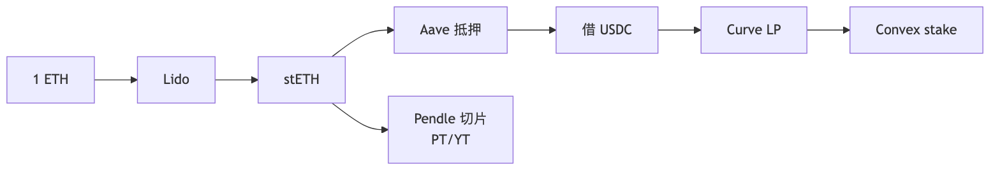
每多一个箭头，"假设面积"乘一次。2025-10 USDe 解杠杆是 Aave-Pendle 环；2026-04 Kelp 事件是 Lido-LayerZero-Aave 环。组合性不是护城河，是传染病学。
章末
记住 3 句话：① DeFi 是状态机 × 不变量 × 组合性；② 上层比下层脆弱；③ 事故几乎都在协议拼接处。
练习：1 ETH 经 Lido → Aave → Pendle → Convex 走完一圈，被 DefiLlama 重复计几次？给一个估计。
Chapter 03
第 2 章：稳定币三家族
TL;DR：稳定币把"链上结算"和"美元 1:1"连起来，三种打法——发行方做托管（USDC/USDT）、合约里超额抵押（DAI/LUSD）、永续对冲（USDe）。三种各自押一个不会破的假设：法币、抵押品、市场对手方。
DeFi 用什么当钱？三件事先排除：① ETH 自己不是 ERC-20，需要包成 WETH（60 行代码、合约里 1:1 锁原生 ETH——这是 DeFi 第一行代码）。② BTC 上以太坊靠桥（WBTC、cbBTC、tBTC、LBTC），信托管方。③ 真正撑起 DeFi 流动性的，是稳定币。
2.1 法币抵押：USDC / USDT
机制一句话：发行方持 1:1 现金+短债储备，链上代币与储备 1:1 可赎回。所有工程问题都在「发行方」三个字——它就是单点。
| 代币 |
发行方 |
市值（2026-04） |
关键事件 |
| USDT |
Tether |
~$140B |
早期透明度差，近年改善 |
| USDC |
Circle |
~$60B |
SVB 2023-03 短期脱锚到 $0.87 |
| FDUSD |
First Digital |
~$3B |
币安生态 |
| PYUSD / RLUSD |
PayPal / Ripple |
$1-1.5B |
机构合规通道 |
钩子事件：2023-03-10 SVB 倒闭，Circle 在该行有 $3.3B USDC 储备无法即时取出，USDC 跌到 $0.87，DAI 也跟着脱锚（PSM 把 USDC 当储备）。整个周末没人能在合约层做任何事——问题在合约外。这是法币稳定币的"链上代码再安全也救不了你"教学时刻。
USDC 工程细节：USDC 是可升级合约，Circle 能冻结任意地址（Tornado Cash 制裁数小时内执行）。Aave/Compound 默认接受这个风险（一次乱冻结毁掉信任，Circle 不会乱来）；LUSD 刻意不收 USDC 抵押当避风港，2023-03 一度溢价到 $1.05。
选哪个：借贷主资产用 USDC（合规深）；CEX 永续保证金用 USDT（流动性深）；机构合规通道用 PYUSD/RLUSD。
2.2 超额抵押（CDP）：DAI / LUSD
机制一句话：锁 1.5 ETH 进金库，借出 2000 DAI；ETH 跌穿阈值，谁都能调一行 liquidate(你) 拿走抵押品换 DAI 销毁。整个流程不依赖任何法币储备，只依赖"清算人会按时来"。
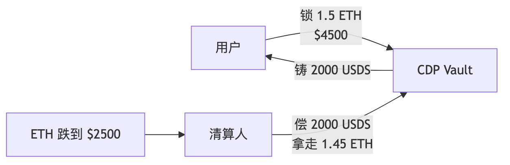
主流 CDP（差异都在"清算机制"和"接受什么抵押"上）：
- DAI / USDS（Sky 协议）：MakerDAO 2024-08 改名 Sky；USDS 供应 > $9B；通过 PSM 让 USDC 1:1 换 USDS（事实上嫁接了法币稳定币的稳定性）。
- LUSD（Liquity）：极简——只收 ETH、最低抵押率 110%、无治理代币、无可升级合约。SVB 那次反而成了避风港。
- GHO（Aave 原生）：Aave 池抵押品支撑，2026-04 治理把 stkGHO slash 关到 0，新出 sGHO（5% APR，无 slash 无 cooldown）。
- crvUSD（LLAMMA 软清算）：抵押品慢慢被换成稳定币，避免一秒强平。详见附录 A.4。
Maker DSR / Sky Savings Rate：DAI/USDS 持有者把币存进 DSR 合约领无风险利率（来源：协议从抵押品借款收的息）；这是 DeFi "risk-free rate" 锚点，sUSDS 是 yield-bearing wrapper。
2.3 合成 / RWA：USDe / Frax / USDM
机制一句话（USDe）：现货 long 1 ETH + 永续 short 1 ETH，组合美元价值不随 ETH 涨跌变化（delta=0），这组合本身就可以当稳定币。
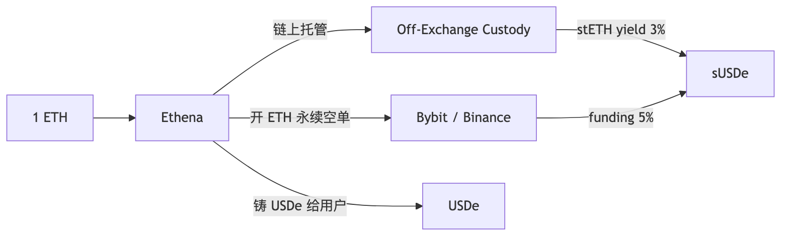
收益来源：① stETH staking ~3%，② 永续 funding rate（牛市多头付空头），③ 基差。
delta=0 不等于自动锚定——三个独立风险：funding 倒挂（熊市要倒贴）、CEX 对手方（Bybit 冻结一笔损失阶跃）、保证金率波动。USDe 2024 上线冲到 $14B 供应，2025-10 funding 倒挂 + Aave-Pendle 杠杆环引爆，三周缩到 $5.92B——这是合成稳定币的"教学事件"。
RWA 稳定币（用国债 token 当储备）：
- frxUSD（Frax V3）：BlackRock BUIDL 支撑，从混合算稳完全转 RWA。
- USDM（Mountain）：100% 短债，rebase 模式（每天余额自增）。
- USDY/OUSG（Ondo）、USYC（Hashnote）：机构通道。
- BUIDL：BlackRock 自己的 tokenized money-market，Frax/Sky/Ondo 都用它当底层——也就是说，BUIDL 一旦出问题三家一起出事。
算法稳定币 = 危险词：UST（Terra）2022-05 死亡螺旋后，纯算法稳定币基本绝迹。任何号称"无外部抵押自稳定"的设计请默认怀疑。
2.4 稳定币流通现实工程
TL;DR：链上稳定币的工程感知不止于"哪条链发行多少"——更要看钱实际怎么流：USDT 一半的供应跑在 TRON 不是 DeFi 选择，是支付/汇款/OTC 选择；USDC 一半在以太坊主网+L2，是 DeFi 选择。理解流通分布才能理解为什么"链上 TVL"和"链上结算量"是两条独立曲线。
USDT 链上分布（截至 2026-04，~$140B 总供应）：
| 链 |
占比 |
主战场 |
工程特征 |
| TRC-20（TRON） |
~50% |
东南亚/拉美/非洲/大陆 OTC、汇款、电商 |
gas 几乎为 0（带宽机制）、TPS 高、监管薄、Tether 自家最低发行成本 |
| ERC-20（Ethereum） |
~30% |
DeFi 借贷/AMM 主场、CEX 大额 |
gas 贵但合约生态最完整 |
| BEP-20（BSC） |
~15% |
PancakeSwap meme/低费 |
兼容 EVM、币安生态外溢 |
| Solana SPL |
~5% |
Phantom/Jupiter、链上高频 |
上升最快、Token-2022 扩展进入主流 |
剩下零散在 Polygon / Avalanche / Arbitrum / Base / Aptos / TON 等。做支付选 TRC-20，做 DeFi 选 ERC-20——同一种代币、不同的工程现实。
Tether 增发监控（市场 alpha 信号）：
Tether 印钞地址（Treasury）是公开的——历史主地址 0x5754284f345afc66a98fbB0a0Afe71e0F007B949（ETH）、TKHuVq...rHFQ（TRON）等。典型路径：
Tether Treasury 印钞 (mint USDT)
→ 转入 CEX 热钱包（Bitfinex / Binance / OKX）
→ CEX 内部分配
→ 现货承接（BTC/ETH 上涨多见于印钞后 24-72h）
监控工具：① Whale Alert（Twitter/Telegram bot，$1M+ 阈值实时推送，含 Tether 印钞）；② Tether 自家 Transparency 页（每日总量 + 链上分布快照）；③ Arkham Entity（Tether/Circle Treasury 实体级追踪）；④ Dune 上有现成 dashboard（搜 "Tether mint"）。Circle Mint 同理但量级小。注意：印钞 ≠ 立即上市；批量铸造常先囤在 Treasury（"authorized but not issued"），实际进市才是信号。
新兴稳定币实战：
| 代币 |
发行方 |
上线 |
工程亮点 / 教训 |
| PYUSD |
PayPal（Paxos 代发） |
2023-08（ETH）/ 2024-05（Solana） |
Solana 版用 Token-2022 confidential transfer 扩展（金额加密、地址公开），机构/支付通道首选 |
| FDUSD |
First Digital（香港） |
2023-06 |
币安主推稳定币；2024-08 短脱钩到 $0.98（First Digital 储备审计风波），48h 回锚——单点托管的典型暴露 |
| RLUSD |
Ripple |
2024-12 |
XRPL + ETH 双发；机构跨境结算定位；NYDFS 监管 |
| USDe |
Ethena |
2024-02 |
delta-neutral 合成；2025-10 funding 倒挂 + Aave-Pendle 杠杆环引爆，三周从 $14B 缩到 $5.92B（详 §2.3） |
判断新稳定币的三件事：① 储备透明度（每日 / 每月 / 季度）；② 法律实体所在地与监管框架（NYDFS / MiCA / HKMA / MAS）；③ 是否有 single point of trust（如 FDUSD 之于 First Digital）。
跨链路由（同一种 USDC/USDT 在不同链之间的工程选择）：
| 路由 |
机制 |
费率 |
用例 |
| CCTP（Circle 官方） |
USDC burn-mint，原生跨链 |
~0.1% |
USDC 跨链首选、无 wrapped 风险 |
| cBridge / Stargate / Allbridge |
流动性池模型 |
0.04-0.6% |
多币种、池子深度依赖 |
| Orbiter Finance |
专 EVM L2 间快速通道 |
极低（节省 L1 中转） |
L2 ↔ L2、Arbitrum ↔ Optimism ↔ Base |
| LayerZero / Wormhole / Axelar |
通用消息 + AMM |
因池而异 |
长尾资产、协议级集成 |
经验：USDC 跨链走 CCTP，USDT 跨链走 Stargate/cBridge，L2 之间走 Orbiter。
出入金链路（法币 → 链上 → 钱包，2026-04 主流路径，前端 SDK 集成 + 商户网关详见 10 §10.6）：
Wise / 银行电汇 →（合规通道）→ MoonPay / Ramp / Transak → 信用卡/SEPA 买入 USDC
→（CEX 充值）→ Binance / OKX / Coinbase
→（链上提币）→ TRC-20 USDT / ERC-20 USDC / Solana USDC
→ 钱包（MetaMask / Phantom / Rabby）
→ 进 DeFi（Aave / Uniswap / Pendle）
反向出金通常走 Bitrefill 礼品卡 / OTC 经纪商 / CEX → 银行。中国大陆用户场景：TRC-20 USDT + 微信/支付宝 OTC（火币 C2C / OKX P2P / 币安 P2P）是事实标准——这也是为什么 TRC-20 占比这么高。
章末
记住 3 句话：① 稳定币不是一种东西，是三种押注（法币 / 抵押品 / 市场）；② 法币稳定币的"链上代码"再稳也救不了"链下银行"；③ delta=0 不等于自动锚定。
练习：你设计一个新借贷协议，主资产必须只接受一种稳定币，列三个判断维度选哪个。
Chapter 04
第 3 章：AMM 入门——Uniswap V2 是自动售货机
TL;DR：池里两个币（500 ETH + 1,500,000 USDC），合约只认一条规则——两个余额相乘后必须不变小（$x \cdot y = k$）。你想拿 ETH 走，就必须扔进足够多 USDC 把乘积维持住。这就是 AMM。
2018 年 Hayden Adams 被以太坊基金会一笔 $100k 资助，写出 250 行代码就是 Uniswap V2。这 250 行定义了后续 6 年所有 DEX 的形状——Curve、Balancer、Pancake、Sushi、Aerodrome 都是它的变体。
3.1 几何直觉
池里 500 ETH + 1,500,000 USDC，V2 把两数相乘作为"不变量"：
k = 500 × 1,500,000 = 750,000,000
交易后 x_new × y_new ≥ k——所有合法状态在这条双曲线上：
y
│
│ ╲
│ ╲
│ ╲ <-- 当前状态点 (500, 1,500,000)
│ ╲
│ ╲___
│ ─────
│ ────── y = k / x
└──────────────────────── x
拿出 1 ETH 必须把 USDC 推到曲线另一点——这就是滑点的来源。
类比：池子是台老式自动售货机——不是按定价卖，而是按"剩多少决定价"。剩越少越贵，永远不会售空（数学上 $x \to 0$ 时价格 $\to \infty$）。
3.2 swap 公式（一行就够）
输入 $\Delta x$（含 0.3% 手续费），输出：
$$
\Delta y = \frac{0.997 \cdot \Delta x \cdot y}{x + 0.997 \cdot \Delta x}
$$
例 1（小额）：池 500 ETH / 1.5M USDC，扔 1 USDC 得 ~0.0003323 ETH，折合 1 ETH ≈ $3009.5——公允 $3000，滑点+手续费 0.32%。
例 2（大额）：扔 100,000 USDC，得 ~31.16 ETH（公允应得 33.33），滑点 6.5%。所以大额一定走聚合器分单（CowSwap、UniswapX、1inch）。
3.3 LP 份额：sqrt(x·y)
初次添加流动性时 liquidity = sqrt(amount0 × amount1) - MINIMUM_LIQUIDITY，1000 wei 永久锁在 0xdead。sqrt(x·y) 是 LP 持仓的几何价值——对相对价格不敏感，只对总流动性敏感。
1000 wei 防 inflation attack：没这 1000 wei，第一个 LP 存 1 wei + 1 wei 拿到 1 份 LP，再直接 transfer 100 ETH 进池——每份 LP 现在值 100 ETH。后来人存 50 ETH，按 50e18 / 100e18 = 0.5 → 取整为 0，存款被吞。锁死 1000 wei 让攻击者先吃损失，存款最小价值不被取整吞掉。
3.4 mint 源码（合约只有这点）
function mint(address to) external lock returns (uint liquidity) {
(uint112 _r0, uint112 _r1,) = getReserves();
uint amount0 = IERC20(token0).balanceOf(address(this)) - _r0; // PUSH 模式
uint amount1 = IERC20(token1).balanceOf(address(this)) - _r1;
if (totalSupply == 0) {
liquidity = Math.sqrt(amount0 * amount1) - MINIMUM_LIQUIDITY;
_mint(address(0), MINIMUM_LIQUIDITY);
} else {
liquidity = Math.min(amount0 * totalSupply / _r0, amount1 * totalSupply / _r1);
}
_mint(to, liquidity);
_update(...);
}
两个工程模式记住：① PUSH 模式——路由器先把 token 转进来，合约靠余额差推算输入。副作用是无许可 flash swap。② lock reentrancy 保护——布尔锁。Curve 2023-07 事件就是这把锁被 Vyper 编译器 bug 弄失效（详见附录 C）。
3.5 闪电贷：swap 函数那一行
闪电贷不是"借钱"——是借和还在同一笔交易里完成。借走 100 ETH，做完套利/清算，结尾还 100 ETH + 0.3% 手续费。还不上整笔交易反转，等于从未发生。所以池子敢零抵押借给你——最坏情况一分钱不亏。
V2 swap 函数里这一行就是闪电贷入口：
if (data.length > 0)
IUniswapV2Callee(to).uniswapV2Call(msg.sender, amount0Out, amount1Out, data);
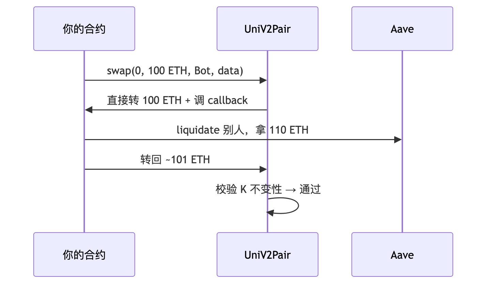
bZx 2020-02 两次事件就是闪电贷+oracle 操纵的组合拳（详见附录 C）。
正当用途：① 清算 bot；② 抵押品迁移（collateral swap）；③ 债务再融资（debt swap，Aave V3 native）；④ Maker→Spark 一键搬家
3.6 无常损失（IL）
ETH=$3000 时存 1 ETH + 3000 USDC 进池。三个月后 ETH 涨到 $6000 你撤资。直觉：应该是 1 ETH + 3000 USDC = $9000。实际：0.707 ETH + 4243 USDC = $8485。少了 $515。这 $515 就是 IL。
类比：LP 是荷官——价格涨时被迫卖 ETH，价格跌时被迫接 ETH。本质是给市场卖 straddle 期权，期权金就是手续费。
💡 公式怕的话先记口诀：① 价格不动 → IL=0；② 价格翻倍 → 亏 5.7%；③ 价格 4x → 亏 20%；④ 不管涨跌对称亏（跌一半和涨一倍亏一样多）。下面的表只是把这四件事写精确，跳过不影响理解。
LP = 卖 straddle 期权（同时押涨跌都赔）。下面公式给精确数字，看不懂可记住：价格变动越大、亏越多。
公式（设价格倍数 $r = p_1/p_0$）：
$$
IL(r) = \frac{2\sqrt{r}}{1+r} - 1
$$
| $r$ |
1.25 |
1.5 |
2 |
4 |
10 |
| IL |
-0.6% |
-2.0% |
-5.7% |
-20% |
-42.6% |
经验：年化 fee yield $f$、波动率 $\sigma$，LP 净收益 $\approx f - \sigma^2/8$。ETH/USDC 池 fee 10%、vol 80% 净 +2%；vol 涨到 120% 净 -8%——这是大行情前 LP 撤资的原因。
3.7 V2 TWAP（一句话）
每次状态变化时累加"价格×时间增量"，外部合约两次采样取差除以时间得 TWAP。采样间隔 ≥ 10 分钟才抗操纵。Cream 2021-10 $130M 事件就是没用 TWAP 而是直接读 vault share-price，被 donation 拉到 2 倍——详见附录 C。
章末
记住 3 句话：① $xy=k$ 是自动售货机，剩越少越贵；② LP 是荷官给市场卖期权，IL 是期权代价；③ 闪电贷只是 swap 函数的副作用，钱在同一笔交易里借和还。
练习：池里 100 ETH / 300,000 USDC，扔 1000 ETH 进去，拉到什么价位？如果别人用这个新价做 oracle，能借多少？
Chapter 05
第 4 章：集中流动性入门——V3 是 V2 的"区间版"
TL;DR：V2 把流动性平铺到 $(0, \infty)$，99.8% 资本在闲着。V3 让 LP 选区间 $[p_a, p_b]$，资本效率提 1000x。代价是 LP 不再无脑——选错区间持仓全变单边废币。
4.1 区间截断的直觉
ETH/USDC 池 99% 的交易发生在 ±20% 区间——但 V2 把同样的流动性铺到 $0$ 到 $\infty$。Hayden 团队 2021 年问："为什么不让 LP 选区间？"
V2：流动性铺满 V3（LP 集中在 [2800, 3200]）
y │╲ y │ ╲
│ ╲___ │ ╲___
└────── x └─2800─3200── x
LP 在区间内表现为"虚拟的 V2 池"（同一条 $xy=k$ 截断），出区间就只剩单边那个币——价格穿出区间时 LP 自动变废。这就是"集中流动性"。
4.2 V3 LP = 卖期权
V2 LP 是荷官（Ch3.6 IL）；V3 LP 是卖区间期权——区间内赚手续费，价格突破区间时承担尾部损失。
这件事写下来就是个区间版 IL，跟 V2 同形——区间越窄、收益越尖锐、突破后亏损越大。新手第一次提供 V3 流动性常见死法：选了 ±5% 的窄区间，第二天 ETH 涨 8%，回来发现持仓全变成 USDC（ETH 全被卖掉了）、还没赚到几块手续费。
4.3 sqrtPriceX96、tick、3 个费率档位
V3 内部用 $\sqrt{P}$ 而非 $P$ 做坐标（$L = \sqrt{xy}$ 在 $\sqrt{P}$ 下是常数，数学更干净）。sqrtPriceX96 是 $\sqrt{P} \cdot 2^{96}$ 的定点数。具体公式见附录 A.1。
价格被离散化成 tick：tick $i$ 对应 $P = 1.0001^i$，每跨一 tick 价格变 0.01%。LP 选区间就是选两个 tick 端点。
| 费率档 |
适用 |
| 0.01% |
USDC/USDT 等稳定币 |
| 0.05% |
稳定币 / 低波动 |
| 0.30% |
主流币对（ETH/USDC） |
| 1.00% |
长尾资产 |
4.4 V3 LP 是 NFT 不是 ERC-20
每个区间是独立的头寸（不同区间不能合并），所以 V3 用 ERC-721 而不是 ERC-20——你的"持仓票"是一张带元数据的 NFT（哪个池、哪个区间、累积 fee）。
4.5 Uniswap V4：singleton + hooks（一段话）
V4（2025-01 上线）AMM 数学没变，工程改了三件事：① Singleton——所有池住进同一个 PoolManager 合约，建池 gas 从 5M 降到 50K；② Flash accounting——多跳 swap 全程一次 transfer；③ Hooks——每池可绑一个回调合约，在 beforeSwap/afterAddLiquidity 等点插钩子，做动态费率、限价单、MEV 返利。
代价：hook 是新攻击面（恶意 hook 能在 beforeSwap 把费率改成 99%），LP 进入前要审计 hook。详见附录 A.2。
章末
记住 3 句话：① V3 是"V2 + 区间"，资本效率 1000x；② V3 LP 是卖区间期权，选错区间持仓变单边；③ V4 数学没变，工程换了打法（singleton + hooks）。
练习：LP 在 [2900, 3100] 区间提供流动性，价格从 3000 涨到 3100。直觉上 ETH/USDC 比例怎么变？（提示：价格涨 → ETH 在区间内被卖出。）
Chapter 06
第 5 章：借贷与健康因子——HF 是抵押品的安全带
先看 §6 Oracle：本章 5.2 清算 + 5.4 杠杆都依赖 oracle 准价；先读 §6 再回 §5 更顺。
TL;DR：抵押 10 ETH（$30k）借 $20k USDC，健康因子 HF=「抵押×清算阈值 / 借款」。HF<1 时谁都能调用 liquidate() 折价拿走你的抵押品。HF 是借贷协议的核心安全带。
5.1 HF 是什么
$$
HF = \frac{\sum_i \text{collateral}_i \cdot \text{LT}_i}{\sum_j \text{borrow}_j}
$$
- LT（liquidation threshold）：清算阈值，每种抵押品独立设定（ETH 通常 82.5%，长尾资产 50%）。
- LTV（loan-to-value）：借款最大比例，比 LT 略低（留缓冲）。
例：存 10 ETH（$30k，LT=82.5%）借 $20k USDC：
$$
HF = \frac{30{,}000 \times 0.825}{20{,}000} = 1.2375
$$
ETH 跌到 $\$3{,}000 \times \frac{20{,}000}{24{,}750} \approx \$2{,}424$ 时 HF=1，被清算。
类比：HF 是车里的安全带——平时无感，急刹时它把你拽住。HF=1.5 安全，HF=1.1 心跳加速，HF<1 你已经在挡风玻璃上了。
5.2 清算时序
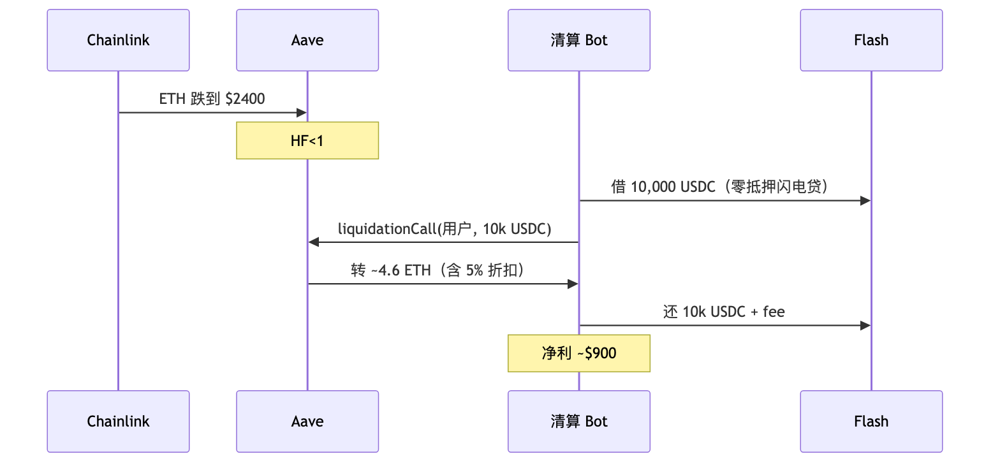
清算人吃 5% 折扣作奖励——这是激励他们及时来清的"自动售货机"。Aave 默认 close factor 50%（一笔最多清一半债务），HF<0.95 才允许 100%——避免一次清完导致借款人完全爆仓。
5.3 利率怎么算（一句话）
利率由利用率 $U = \frac{\text{borrows}}{\text{supplies}}$ 单变量驱动。Compound 发明了 jump rate——U 在 80%（kink）以下平缓涨，超过 80% 陡升：
borrow rate (%)
25│ /
10│ /
5│ ___/
0│__/
└─0──50──80──100→ U (%)
kink
为什么陡升？池子快借空时必须用价格挤出借款人 + 吸引新存款——这就是利率"自动稳定器"。Aave 对不同资产用不同曲线（稳定币 kink 92%，挥发资产 80%，长尾资产 45%），完整公式见附录 B.1。
5.4 杠杆循环（Aave-Pendle 故事的根）
e-mode：把相关性高的资产（ETH/stETH、USDC/USDT）划一组享受 93% LTV（默认 75%）。这让循环杠杆变得诱人：
存 10 wstETH → 借 USDC（93% LTV）→ swap 成 wstETH → 再存 → ...
理论上限 = 10 / (1-0.93) ≈ 143 wstETH
实际几次后就停——swap 滑点 + gas + borrow rate 累积。盈利条件：wstETH staking yield > USDC borrow rate。一旦 yield 跌或 borrow rate 涨，所有人同时解杠杆——2025-10 USDe 事件就是这么炸的。
5.5 三类借贷协议（一段话）
- 共享池（Aave V3）：所有资产共享一个池，多种抵押 + 多种借款，e-mode 给相关组高 LTV。TVL 龙头 ~$26B。isolation mode：高风险资产（如长尾 token）作为抵押品时，借款上限被钉死、不能与其他抵押品组合，防一笔坏账拖累整池
- 单一基础资产（Compound III / Comet）：每市场只能借一种资产（USDC），抵押品只能存不能借——主动牺牲资本效率换安全（V2 时代被闪电贷打了多次）。
- 隔离市场（Morpho Blue）：极简五元组 (抵押, 借款, oracle, IRM, LLTV)，无许可建市场，复杂性外包给上层 curator vault。
详见附录 B.2-B.4。
5.6 软清算 vs 硬清算
| 维度 |
硬清算（Aave/Compound） |
软清算（crvUSD LLAMMA） |
| 触发 |
HF<1 一刀切 |
价格穿过 band 渐进 |
| 用户体验 |
暴跌一秒被强平 |
慢慢被换成稳定币 |
| 损耗 |
5-10% 清算折扣 |
反复穿 band 的"震荡损耗" |
LLAMMA 数学详见附录 A.4。
章末
记住 3 句话：① HF=（抵押 × LT / 借款），<1 必被清算；② 清算人靠 5% 折扣赚钱，闪电贷让他们零本金运行；③ jump rate 让利率成为自动稳定器，e-mode 是杠杆循环的开关。
练习：你存 100 wstETH（$300k，LT=82.5%）借 $200k USDC。ETH 瞬间跌 20%，HF 多少？还能撑住吗？
Chapter 07
第 6 章：预言机——链下价格怎么搬上链
本节是 Oracle 工程主讲（架构 + 选型 + 完整代码 + 案例复盘）；攻击家族直觉见模块 05 §3。
TL;DR：合约里的价格不是凭空来的。Chainlink 节点主动推（push），Pyth 让消费者按需拉（pull），TWAP 用过去 N 分钟均价防操纵。oracle 是 DeFi 单类损失最大的攻击面——Mango $116M、Cream $130M、bZx 都是 oracle 攻击。
6.1 Push vs Pull（一张表）
💡 直觉：push 像新闻联播——节点按点准时广播，你被动接收（不新鲜但稳定）；pull 像外卖——你下单它才送，新鲜但你付配送费；TWAP 像菜场平均价——把过去 N 分钟的成交平均一下，操纵成本高得多。借贷选 push、永续选 pull、防操纵选 TWAP。
| 模型 |
谁推上链 |
谁付 gas |
适用 |
| Chainlink push |
节点定时推（heartbeat 1 小时或偏离 0.5% 触发） |
节点付 |
借贷、稳定币（确定节奏） |
| Pyth pull |
价格存在 Pythnet（每 400ms 更新），消费者按需拉 |
调用方付 |
永续、清算（延迟敏感） |
| TWAP |
Uniswap V2/V3 自带，外部合约取过去 N 分钟均价 |
消费者付 |
防操纵的廉价方案 |
Chainlink 调用代码（这一段记一辈子）：
(, int answer, , uint updatedAt, ) = feed.latestRoundData();
require(block.timestamp - updatedAt < 3600, "STALE"); // 必须做心跳检查！
不做 stale 检查 = 用 24 小时前的价格清算别人 = 灾难。RedStone（push+pull 双模）和 Chainlink Data Streams（pull 低延迟）是 2025-2026 增长最快的两家替代，模型上是 Chainlink/Pyth 的杂交。
6.2 Mango 故事（oracle 攻击经典）
2022-10-11，Avi Eisenberg 用约 $10M USDC（CFTC 起诉书 / Halborn 复盘）在三家小盘 CEX 同时挂单把 MNGO 现货从 $0.04 拉到 $0.91（涨 22 倍）。Mango 的 oracle 老老实实把 MNGO 估值同步上去。Avi 在 Mango 的 MNGO 永续多单瞬间盈利 $400M+，把这笔虚高浮盈当抵押借走 $116M。整个攻击 20 分钟、合约按设计运行——但合约相信的"现货价"不再代表真实市场价。
教训：① 用现货价做风控前先问"市场深度能撑多大操纵"；② 叠加 TWAP 或集中度阈值；③ Chainlink + 多源 + secondary oracle（Aave V3 做法）。Cream / bZx / Mango 三例完整复盘见附录 C。
法律续集：Eisenberg 2024 年被判欺诈罪，2025 年法官以"Mango 没有用户协议、没有禁止操纵条款"为由 Rule 29 撤销有罪判决。检方上诉中。
章末
记住 3 句话：① Chainlink 推、Pyth 拉、TWAP 防操纵；② 必须做 staleness 检查；③ 用现货价做 oracle 是 DeFi 历史最贵的错误。
练习：USDC/USD Chainlink 心跳是 24 小时（偏离阈值 0.25%）。USDC 在 12 小时内从 $1 跌到 $0.85 但偏离没触发更新，借贷协议会怎样？设计一个对冲方案。
Chapter 08
第 7 章：LST / LRT 入门——一笔 ETH 干几份工
为什么需要 restaking：ETH 质押已 32M ETH 闲置，只为以太坊本身做安全。EigenLayer 让你把 staked ETH 再次抵押给其他服务（DA、oracle、bridge），收第二份费——但叠加 slashing 风险。
TL;DR：原本 32 ETH 起步、本金锁死的 staking，被 Lido 拆成"任意金额 + 流通的 stETH"，开了 LST 时代。然后 EigenLayer 又把同一笔 ETH 出租给多份"工作"（DA、桥、appchain）赚多份收益——这就是 LRT。代价是单点风险叠加：2026-04 Kelp 事件就是这条路的雷。
7.1 LST：把质押权益代币化
ETH PoS 质押年化 2.5-3.5%，但本金锁定 + 退出队列要等几天。Lido 的解法：你存 ETH → 协议帮你 stake → 给你一个 ERC-20 凭证（stETH），代表你的本金 + 持续累积的 yield。这个凭证可以在 Curve 交易、在 Aave 抵押——等于把"锁定+生息"重新拆成"自由转账+生息"。
主流 LST（2026-04）：
| 协议 |
代币 |
TVL |
特色 |
| Lido |
stETH / wstETH |
~$23B |
龙头，流动性最深 |
| Rocket Pool |
rETH |
~$2-3B |
去中心化（2700+ 节点） |
| Coinbase |
cbETH |
~$1B |
合规友好 |
| Frax / Mantle |
sfrxETH / mETH |
~$1B 各 |
链生态绑定 |
7.2 stETH vs wstETH（DeFi 工程必知）
stETH 是 rebase 模式——每天合约把所有人的余额按 yield 重算。问题是 DeFi 合约假设余额不变——把 stETH 扔进 LP 池，rebase 收益会被池子吞掉、借贷协议利息算错。
wstETH 是 wrap 版——余额恒定，wstETH/stETH 汇率单向上升（汇率代表累积 yield）。DeFi 合约永远用 wstETH，不用 stETH——Aave V3 e-mode 就是接 wstETH。
7.3 stETH 流动性脱锚（2022-06 故事）
2022-06-12 周日凌晨，三箭资本爆仓清算开始，几亿美元 stETH 被强制抛进 Curve 池。stETH/ETH 比价从 1:1 跌到 1:0.97 再到 1:0.94——你池子里那一半 stETH 估值少 6%。但底层 ETH 仍 1:1 可兑换——只是要等几天才能从 Lido 提出来。这就是流动性脱锚而非基本面脱锚。从此所有借贷协议给 stETH 设 LT 70-80%，再不能享受和 ETH 一样的待遇。
7.4 LRT：再走一阶
2021 年 Sreeram Kannan（华盛顿大学教授）盯着以太坊在想：全网 $400 亿+ 的 ETH 在干同一份工（验证主链）赚 3%——为什么不让它再租给别的工作？ 这就是 EigenLayer 的核心思路。
💡 用户视角的 motivation：你的 1 ETH 已经在 Lido stake 赚 3%，但只为以太坊主链做保安——这份"安全感"是闲置资源。如果有人愿意付额外 2-4% 让你"分神"也帮他们的桥/oracle/DA 层做保安，你愿意吗？愿意 → 你就是 LRT 的目标用户。但额外的 2-4% 不是白给——任一份兼职出事，你的本金（不是收益）会被罚没。这是和"循环抵押多赚利息"完全不同的风险：那只是亏利差，这是亏本金。
Restaking = 把同一笔 ETH（或 LST）的安全性出租给多个 AVS（Actively Validated Service：DA 层、桥、appchain、oracle 等），赚多份收益。代价是slashing surface 叠加——任一 AVS 出问题你的本金都被罚。
LRT = 用户委托 ETH/stETH 给 LRT 协议，协议作为 operator 接管多个 AVS 的 slashing 风险，奖励聚合后分给 LRT holder。代币如 eETH、ezETH、rsETH。EigenLayer 2026-04 TVL ~$18B，39+ 个活跃 AVS。
7.5 Kelp 事件（LRT 的"教学雷"）
2026-04-18，Kelp 跨链桥用了 1-of-1 DVN（LayerZero 单点验证），私钥被攻陷。攻击者签发"Polygon 那边铸了 $292M rsETH 请同步"的假消息，Ethereum 合约通过——$292M 凭空出现的 rsETH 被抵押到 Aave 借走 wETH。Aave 一夜 TVL 跌 $6.6B、AAVE 跌 16%、Lido 跌 19%（市场担心 stETH 也走 LayerZero）。
教训：① 借贷协议接受跨链 wrapped 资产时，桥的安全模型就是你协议安全模型的一部分；② 1-of-1 DVN 是单点，应该 2-of-3 起步。详细复盘见附录 C。
7.6 同一笔 ETH 的"多份工"图
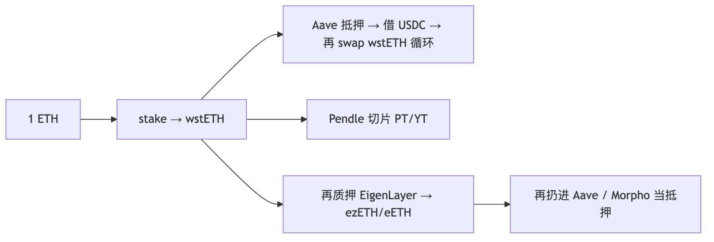
每多一层都增加单点。USDe 2025-10 解杠杆事件、Kelp 2026-04 事件都是这条链上的故事。Pendle PT/YT 数学见附录 E、Restaking 经济学见附录 G、Berachain PoL / Real Yield 辨真伪见附录 F。
章末
记住 3 句话：① LST 把"锁定+生息"拆成"流通+生息"；② DeFi 合约用 wstETH 不用 stETH（rebase 的坑）；③ LRT 是让一笔钱干多份工，代价是单点叠加——Kelp 事件就是这条路的雷。
练习：你买 1 ezETH 实际承担哪些风险？至少列 5 条。
Chapter 09
第 8 章：MEV 入门——链上的高频交易
TL;DR：区块里"先做哪笔交易"本身值钱——builder/searcher 抢着排序赚钱，每年 $5-10B。Sandwich（夹你的 swap 赚滑点）是恶性 MEV，清算 / 套利是良性 MEV。Flashbots 把这件事从"黑暗丛林"变成"有规则的拍卖"。
2019 年 Phil Daian（康奈尔博士生）写了 Flash Boys 2.0——名字致敬 Michael Lewis 讲华尔街高频交易那本《Flash Boys》。他发现以太坊 mempool 每天上演前置+三明治+清算大战，套利者赚走 $5-10B/年——钱来自普通用户每笔 swap 多付的滑点。论文一出，他和团队成立 Flashbots——给 searcher 建私有 mempool、给 validator 建拍卖系统。
8.1 五类 MEV
| 类别 |
怎么赚 |
良/恶 |
| Sandwich |
在你 swap 前后各放一笔，夹击你的滑点 |
恶 |
| JIT LP |
大单前一区块加流动性、后一区块撤，吃掉手续费 |
灰 |
| 清算 |
HF<1 立刻发清算 tx 拿 5% 折扣 |
良（必要的） |
| 跨链套利 |
L1/L2 价差 |
良 |
| Backrun 套利 |
大单后反向 swap 拉回价格 |
良 |
8.2 Sandwich 怎么干你（时序）
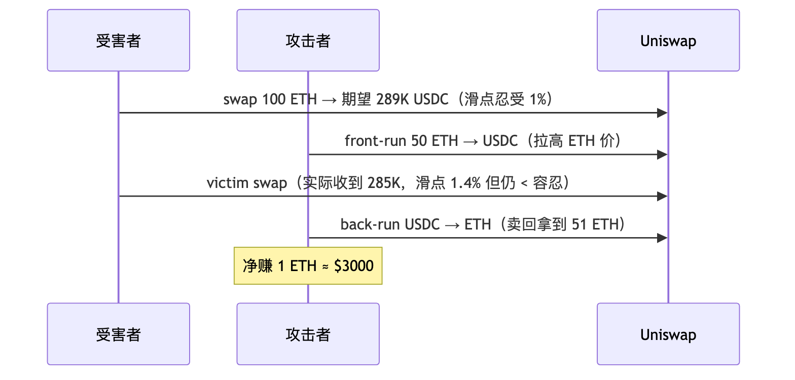
防御：① 调低滑点容忍（但太低会 revert）；② 用 CowSwap / UniswapX 等 intent 系统（详见附录 H），让 solver 帮你撮合避开公开 mempool。
8.3 Flashbots + MEV-Boost 架构（一段话）
普通 tx 进公共 mempool（任何人能看见，被 sandwich）；想做 MEV 的人通过 Flashbots Relay 提交"私有 bundle" → Builder（Beaverbuild、Titan、BuilderNet）打包 → MEV-Boost（跑在 validator 上的 middleware）选最高出价 block 提议。90%+ 以太坊区块 走这条路。前两大 builder 占 90%+ 区块——MEV 中心化 是 2026 仍未解决的问题。
BuilderNet（2024-12 上线）：Flashbots 把所有 builder 迁到一个跑在 TEE（可信执行环境）里的去中心化网络——这是 MEV 历史的转折。SUAVE 是下一代：跨链 MEV-aware encrypted mempool，订单加密发送、TEE 里竞标、执行才解密。
协议侧防御：commit-reveal（CowSwap）、batch auction（Penumbra）、private RPC（MEV Blocker / Flashbots Protect）、动态滑点（Uniswap V4 hook）
章末
记住 3 句话：① MEV = 区块排序权的市场化定价；② sandwich 恶、清算良、JIT 灰；③ Flashbots 不是消灭 MEV——是把它变成有规则的拍卖。
练习：你写一个 sandwich bot 抢 100 ETH 的 swap，front-run 50 ETH。如果另一 bot 在你之后又来一笔，结果怎样？
Chapter 10
第 9 章：风险全景——UST、Mango、五条铁律
TL;DR：DeFi 历史损失 $400 亿+，每一桩都不是"代码 bug"那么简单——根因往往是经济模型、跨协议假设、私钥管理、监管转向。本章讲两个故事（UST、Mango）和五条铁律。其它 12+ 事件完整复盘见附录 C。
9.1 风险六大类
┌── 智能合约：reentrancy / 精度 / logic bug
├── 预言机：闪电贷操纵 / stale / 集中度
├── 经济模型：算稳螺旋 / 杠杆解杠杆 / funding 倒挂
├── 桥/跨链：multisig / DVN 配置 / proof bug
├── 治理：flash loan vote / 多签 phishing / key 单点
└── 监管：地址封禁 / Tornado 制裁 / 运营 KYC 强制
9.2 故事一：UST 死亡螺旋（2022-05，$400 亿）
28.3.1 UST 死亡螺旋（2022-05）
想象一栋楼有两部电梯：A 电梯（UST）说"我永远在 1 楼"、B 电梯（LUNA）说"我浮动"。规则是：A 不在 1 楼时，谁都能用 1 个 A 的票换"1 美元价值的 B 票"——市场会自动套利把 A 拽回 1 楼。这套机制在 LUNA 票还值钱时一直工作。问题来了：当 A 跌到 0.97、套利者大量铸 B 卖出，B 价格跌；A 还没回到 1 元、套利者要更多 B 票才换 1 美元价值；铸出的 B 更多被卖、B 价格继续跌。两部电梯互相往下拽——这就是死亡螺旋。2022-05-07 周末第一次脱锚开始，到 2022-05-13 一周内 UST 从 $1 跌到 $0.01、LUNA 从 $80 跌到 $0.0001、$400 亿市值蒸发。Do Kwon 流亡黑山被抓，2025-12-11 美国南区法院判 25 年联邦监禁。
机制根因：UST 跌 → 套利者用 1 UST 换价值 $1 的 LUNA → 铸出的 LUNA 立刻被卖 → LUNA 价格跌 → 每 UST 换更多 LUNA → LUNA 供应爆炸——死亡螺旋。
时间线（来源：Anatomy of a Run 哈佛、Terra-Luna ScienceDirect）：
- 2022-05-07：两大地址从 Anchor 提走 $375M UST。Curve 3pool 出现 UST/3CRV 卖压。UST 跌到 ~$0.972。
- 2022-05-09 至 10：LFG 卖 BTC 和 ~$480M USDT 护盘，无效。
- 2022-05-10 至 13：UST 跌到 $0.30、$0.10、$0.01。LUNA 从 $80 跌到 $0.0001。
- 2022-05-16：UST/LUNA 基本归零。LUNA 供应从约 3.45 亿炸到约 6.5 万亿（19000 倍稀释）。
Do Kwon 后续：2024-2025 在美国受审，因 $40B 崩盘被判 25 年联邦监禁（2025-12-11 美国南区法院判）。
这件事教什么：① 算法稳定币的"无外部抵押自稳定"是个谎言；② 经济模型出问题时合约代码再安全也救不了你；③ "看起来稳"的协议要先问"极端行情下还能维持吗？"。
9.3 故事二：Mango Markets（2022-10，$116M）
Avi Eisenberg 操纵 MNGO 现货 22 倍拉盘，虚高浮盈当抵押借走 $116M——"用现货价做 oracle 必死"的教科书案例。详见 §6.2。
9.4 五条铁律（夜间读物）
这五条贯穿前文每一桩事故，背下来。
铁律 1：所有外部输入都是攻击面——oracle、跨链消息、参数、ERC-20 余额、编译器输出 bytecode。Curve 2023-07 是 Vyper 编译器 0day。
铁律 2：默认值必须安全——Nomad 把 trusted root 设为 0x00，而 untrusted 默认也是 0x00，所有消息被当成"已验证" → $190M。
铁律 3：跨协议假设必须显式验证——Penpie 信任 Pendle 上"所有市场"，没验证是否在治理白名单 → $27M。永远不要假设你交互的合约符合你预期的不变量。
铁律 4：私钥即权力——Ronin / Multichain / Radiant / Orbit / HTX 五个事件都是私钥被攻陷（钓鱼、CEO 跑路、APT 入侵）。air-gapped 离线设备 + 二次设备验证 是最高级别防御。
铁律 5：经济模型大于代码——UST、Beanstalk、Mango 都是合约按设计运行但经济假设破裂。永远问"极端行情下这个机制还能维持吗？"。
9.5 三个常被忽视的"次级风险"
A. 协议关停 / 跑路——对策：看治理代币持有分布、多签 signer 身份、是否有 emergency shutdown（参考 Multichain CEO 被带走 $130M）。
B. 审计 / 风控利益冲突——Gauntlet 同时是 Aave 风控方和治理持币方。对策：交叉对照多家审计（OpenZeppelin / Trail of Bits / Spearbit / Zellic / Cyfrin）。
C. 监管转向——Tornado Cash 制裁、SEC vs Uniswap Wells Notice、GENIUS Act / STABLE Act。对策：协议设计时考虑"最坏情况下能否 pause / 迁移 / 分叉"。
9.6 AI × DeFi（用得到与跨不过的边界）
AI 用得到：① mempool 监控、MEV 检测；② 风险参数优化（Gauntlet / Chaos Labs 跑数十万 agent-based simulation 推荐 LT/LB）；③ 清算风险打分；④ intent solver 路由优化；⑤ 反欺诈聚类（Chainalysis 几小时归因 DPRK 靠的是地址 cluster）。
AI 跨不过：① 经济学尾部——ML 给"过往分布的概率"，给不了 UST 那种"分布外"的尾部；② 形式化验证——LLM 辅助写 invariant，但 Certora、Halmos、Foundry invariant 才是主线；③ 治理判断——是否提高 LT、是否封禁地址，价值判断没有最优解。
工程师姿态：AI 是放大判断的工具，不是替你判断的黑盒。
章末
记住 3 句话：① UST 教训：算法稳定币是谎言；② Mango 教训：现货 oracle 必死；③ 五条铁律——外部输入皆攻击面、默认值要安全、跨协议要验证、私钥即权力、经济模型大于代码。
练习：任选 rekt.news 一桩 $50M+ 事件，用前文 8 章交叉引用画出根因链。
9.7 推荐进阶阅读
9.8 行业级历史教训（连锁清算 + Circle 储备改革 + Mt.Gox 还款）
TL;DR：DeFi 工程师的"宏观风控直觉"不能只靠协议级 postmortem——还要熟三类系统级事件：① 连锁清算（一根稻草拉倒整片中心化借贷）；② 储备/托管侧改革（USDC 脱钩催生的法币稳定币新范式）；③ 大规模历史包袱释放（Mt.Gox 14 万 BTC 还款）。这三件事每一件都重写了行业架构。
A. 2022-06 暑假连锁清算（三因子模型）
2022 上半年三件事同时点火：
| 因子 |
事件 |
时间 |
触发链 |
| GBTC 折价 |
Grayscale BTC Trust 折价从 -10% 拉到 -45% |
2022 Q1-Q2 |
持有 GBTC 套利的对冲基金（含 3AC）账面巨亏 |
| stETH 杠杆 |
Lido stETH 因流动性紧张折价到 0.94 ETH |
2022-06 |
借 ETH 买 stETH 循环杠杆全线爆仓 |
| UST 崩盘 |
UST/LUNA 死亡螺旋（详 §9.2） |
2022-05 |
$400 亿市值蒸发 |
连锁反应（以"暴露面 → 破产先后"为顺序）：
3AC（Three Arrows Capital）
├ 持 LUNA 大头 + GBTC 套利杠杆 + stETH 杠杆
├ 6 月被 BlockFi / Genesis / Voyager 追保 → 35 亿美元爆仓 → 6/27 BVI 申请破产
Celsius Network
├ Mashinsky "Banking is dead" 庞氏 yield；CEL 代币内部对敲
├ 7/13 申请破产；Mashinsky **2024-12-03 plea guilty 认罪**（两项 fraud），2025-05-08 判 12 年
Voyager Digital
├ 借 3AC ~$650M 无抵押 → 6/30 暂停提款 → 7/5 破产 → FTX 一度收购但跟着崩
BlockFi
├ 暴露 3AC + 后续 FTX 信贷额度 → 2022-11 破产
Genesis Trading（DCG 子公司）
├ 借 3AC $2.4B + 借 Alameda → 2023-01 破产
├ 引爆 Gemini Earn 纠纷（Gemini 用户 9 亿存款被困）→ DCG/Cameron Winklevoss 互撕
工程启示：① 中心化借贷之间是未抵押信贷网络（你以为的 over-collat 只在 DeFi 一侧），一根线断全网拉爆；② 链上数据在 6 月就能看见 stETH 折价 + 3AC 钱包动作（Nansen/Arkham 标签），但 alpha 窗口 < 72h；③ 这是为什么本书反复说"组合性 = 传染病学"——CeFi 的版本叫"对手方传染病"。
B. 2023-03 SVB → USDC 脱钩 → Circle 储备改革
时间线：
2023-03-08 周三：SVB 公布 $18B 浮亏 + 募资失败 → 挤兑
2023-03-09 周四：硅谷创业公司全网 wire transfer 撤资
2023-03-10 周五：FDIC 接管 SVB；Circle 公告 $40B 总储备中 **$3.3B 困在 SVB**
2023-03-11 周六：USDC 跌到 $0.87；DAI 跟脱（PSM 把 USDC 当储备 → 详见 §2.2）
2023-03-12 周日：FDIC + Treasury + Fed 宣布全额担保 SVB 存款
2023-03-13 周一：USDC 回锚 $0.999；Circle 公告资金已转 BNY Mellon
工程冲击（Circle 的"周末没人能动"催生改革）：
| 改革项 |
内容 |
后果 |
| 储备结构 |
现金 + 短债 → BlackRock USDXX（Circle Reserve Fund，专属国债 MMF） |
储备一夜之间变 BlackRock 监管的注册基金，单银行风险归零 |
| 透明度 |
月度审计 → 每日公开持仓 + Grant Thornton/Deloitte 月报 |
任何人能查具体国债 CUSIP |
| 赎回通道 |
Circle Mint API 开给机构 1:1 赎回 |
减少二级市场脱锚冲击 |
| 叙事副产品 |
"Operation Choke Point 2.0"——加密企业被美国传统银行集体拒户 |
推动 Custodia / Cross River / 加密原生银行兴起 |
后续 USDC 一路稳定到 2026-04 ~$60B 供应，但机构对"单点托管即风险"的认知再也回不去。这也是 GENIUS Act / STABLE Act 立法推进的根因之一。
C. 2024-07 Mt.Gox 还款（14 万 BTC 历史包袱）
背景：Mt.Gox 2014-02 倒闭时被盗 ~85 万 BTC；其中 ~14.2 万 BTC 在 2017 年被信托人 Nobuaki Kobayashi 找回，存入冷钱包等待分配方案。10 年法律拉锯后 2024-07-05 开始正式分发：
2024-07-05 Trustee 开始向 Bitstamp / Kraken / SBI VC Trade 分发
2024-07 中 ~$3B 等值 BTC 进入交易所；BTC 从 $66k 跌到 $54k
2024-08-16 分发已完成 ~$8B（约 6 万 BTC）
2024-12 大头分发完结（剩约 4 万 BTC 留作税务/争议余量）
2025 尾部分发 + 早期 OG 持有人选择 BCH 索赔渠道
为什么市场没崩：① 信托人采取"渐进释放" + 分多个交易所，规避单笔冲击；② 早期持有人 cost basis $50-200，落袋后再投资概率高；③ ETF 通道吸纳能力（贝莱德 IBIT 同期持续吸 BTC）。
工程启示：① 托管侧的 reorg buffer 不仅是技术问题——分发节奏、KYC 通道、税务认领期都是工程参数；② DeFi 协议设计大额提款时也应有"分批 + 节流"机制（Aave 提款冷却、Lido withdrawal queue 都从这类教训而来）；③ 历史欠账的释放是周期性 alpha 信号：监控 trustee 钱包 + 交易所入金可提前对冲。
D. FTX 全景（2022-11 → 2024-2025 还款）
（简版攻击面对照见 05 故事 3）
简表：
| 维度 |
内容 |
| 崩塌路径 |
Alameda 资产负债表（11/02 CoinDesk 曝光 FTT 占大头作为抵押）→ CZ 11/06 公开抛售 FTT → 挤兑 11/08 → 11/11 申请破产 |
| 前后台分仓做市 |
FTX 用户存款被悄悄挪给 Alameda；后台代码硬编码 Alameda 不被强平（"allow_negative=True"） |
| 抵押品魔术 |
Alameda 用 FTT（自家发的代币）作为对其它 CEX 的借款抵押 → FTT 价格塌就连环爆仓 |
| 司法 |
SBF 2024-03 判 25 年；Caroline Ellison 2 年；Gary Wang / Nishad Singh 缓刑 |
| 还款 |
Sullivan & Cromwell（破产律所）主导清算；2024-2025 分批偿还 ~$14B（含 9% 利息），按 2022-11-11 freeze date 美元价折算（用户拿不到币价上涨收益） |
| 用户教训 |
"Not your keys, not your coins"——交易所托管 = 信用风险；2024 后 PoR + 自托管钱包采用率显著提升 |
与本模块的关联：FTX 是 CeFi 翻车的极端样本，但其"前后台合一 + 自家代币当抵押 + 客户资金混同"三件事在 DeFi 也有等价物——前两个对应可升级合约 + 治理代币质押，第三个对应 collateral re-hypothecation。读 DeFi 协议时反复问"它有没有 FTX 同型陷阱"是高 ROI 的训练。
Chapter 11
附录 N. 巨鲸跟单 + 聪明钱（链上 alpha 工具栈）
TL;DR：链上数据是公开的、连续的、永不丢失的——这意味着任何"聪明钱"的足迹都暴露在外。本附录是数据驱动 alpha 的工程视角：用四个工具栈把"看到 → 标签 → 信号 → 跟单"做成 pipeline，再用 PoR 监控守住反向风险。
DeFi 工程师的判断力一半来自源码，一半来自链上行为数据。聪明钱（smart money）不是玄学——是有标签 + 有历史回撑 + 有可复现胜率的地址簇。下面四件工具是 2026-04 实战栈。
O.1 Nansen Smart Money
定位：标签库最大（1.5 亿+ 地址实体标签）、机构覆盖最深。
核心 alpha 提取：① Smart Money dashboard——按"过去 30 天 ROI" / "持仓集中度" / "活跃度"筛选 top 1000 地址；② Token God Mode——任意 ERC-20 看 top holders + 入场成本 + 浮盈分布；③ Wallet Profiler——单地址画像：胜率、持仓时长、惯用 DEX、关联实体。
典型用法：发现某新代币 Smart Money 净流入连续 3 天 → 反查这些地址历史胜率 > 70% → 跟单（小仓位 + 严格止损）。
O.2 Arkham Entity 实体追踪
定位：实体级图谱（把分散地址聚成"3AC"、"Justin Sun"、"Tether Treasury"等实体）。
核心功能：① Visualizer——画出实体间资金流向图（3AC → Genesis → DCG 那种）；② Ultra（赏金市场）——悬赏让别人去揭示某地址背后的实体（"谁是 Wintermute 的对手方？"）；③ Entity-level Alert——某实体大额转账即时推送（比 address-level 噪声低得多）。
典型用法：监控 Tether Treasury 实体 → 印钞 → 转 CEX → 现货上涨 alpha（详 §2.4）。
O.3 Dune copy-trade 信号
定位：开源 SQL dashboard 平台，DeFi 数据的 GitHub。
工作流：
1. 在 dune.com 搜 "copy trade" / "smart money" / "MEV"
→ fork 别人的 dashboard
2. 改 SQL：调整地址列表、阈值、时间窗
3. Set up alert（Pro 版）或导出 CSV → 自建 Telegram bot
4. 加一个 "归因 query"——为什么这个地址被标 smart？
优势：完全可定制 + 完全免费（社区版）；劣势：标签靠社区维护，新地址覆盖滞后于 Nansen/Arkham。
经典 dashboard：① "Hyperliquid Whale Trades" by 21co；② "Aave V3 Liquidation Bot Tracker"；③ "PumpFun Smart Money"。
O.4 Whale Alert 信号工程
定位：Twitter/Telegram bot，实时推送大额转账。
实战配置：① 阈值过滤——默认 $1M+ 噪声大（CEX 内部归集占大头），调到 $5M-$10M 看真实信号；② 链 + 资产白名单——只看 BTC/ETH/USDT/USDC + 关心的几条链；③ 方向标签——"unknown wallet → exchange"是潜在抛压、"exchange → unknown"是潜在囤积；④ 联动 Arkham——Whale Alert 给地址，Arkham 给实体身份。
经验：单条 Whale Alert 不构成信号；连续 3 条同方向 + 时间窗 < 6h 才有 alpha。
O.5 PoR 交易所储备金证明（反向风险）
跟单聪明钱是进攻面；监控 PoR（Proof of Reserves）是防守面——别让你跟单的钱本身都在一个会破产的 CEX 里。
主流 PoR 实现：
| 交易所 |
频率 |
机制 |
局限 |
| Binance |
月度 |
Merkle Sum Tree（详见模块 08 §5）+ zk-SNARK 提案 |
只证资产侧，负债侧自报 |
| OKX |
月度 |
Merkle Sum Tree |
同上 |
| Coinbase |
季度 |
第三方审计（Deloitte） |
不是真链上证明 |
| Bitfinex |
不定期 |
链上钱包公开 |
弱 PoR |
负债侧攻击面分析（Llama Risk / Vasco / ChainArgos 类研究）：① CEX 可在快照时刻向钱包"借"币、快照后归还（windowed proof 漏洞）；② 客户负债自报，AUM 核对靠链下；③ 跨实体抵押（如 Alameda 用 FTT 抵押从其它 CEX 借款，FTT 在快照时计入资产但实际是循环抵押）。
工程师姿态：PoR 是最低门槛而不是充分证明。结合 Whale Alert（监控 CEX 钱包异常归集）+ Arkham 实体（揪关联实体的循环抵押）+ Nansen 资金流向，才能在下一次"FTX 时刻"前 72h 出来——这就是数据工程的 alpha 上限。
Chapter 12
结语
读完主线 9 章后的能力基线：
1. 逆向阅读：拿到任意 DeFi 合约，1 小时内画出它在四层结构中的位置、核心不变量、外部依赖、清算路径。
2. 本地复现：fork mainnet 跑通 V2 swap、V3 mint、Aave 清算、ERC-4626 deposit。
3. 事故归因：任选 rekt.news 一桩 $50M+ 事件，用前文章节交叉引用画出根因链。
四条工程心法（贯穿全书）：
- 上层只能比下层更脆弱——下层假设破裂会一路向上传导。
- 假设没写在代码里就一定会被攻击——把不变量写成 invariant test。
- 源码不撒谎，TVL 经常撒谎——优先读 storage layout 和 modifier。
- 真实价值看 fee revenue / share，不看 emission APR——后者是稀释购买力的会计幻觉。
附录 A-H 是研究/进阶资料，按需查阅。附录 I 是协议索引 + Foundry 实战 + 学习路径。
下一站：DeFi 的下一道关卡是 Gas——主网每笔 swap 几美元，没法服务长尾用户，更接不住高频 MEV 之外的散户场景。模块 07（L2 与扩容）看 Rollup / DA / 桥怎么把 DeFi 推到亚秒级 + 分级 Gas，让本模块讲过的 AMM、借贷、清算重新跑在一个有物理基础设施的世界里；之后模块 08（ZK）补隐私 DeFi 的语言，模块 05（合约安全）可从攻击者视角再读一遍。
Chapter 13
附录 A：AMM 数学补充
主线 Ch3 讲了 V2 的 $xy=k$、Ch4 讲了 V3 区间直觉。本附录补四件事：V3 的 $\sqrt{P}$ 坐标 + Q64.96、V4 hooks 全集、Curve StableSwap + LLAMMA、Balancer 加权池 + Trader Joe LB + ve(3,3)。
A.1 V3 √P 坐标 + Q64.96 + tick
V3 用 $\sqrt{P}$ 做内部坐标，流动性 $L = \sqrt{xy}$。在区间 $[p_a, p_b]$ 内提供 $L$、当前价格 $P \in [p_a, p_b]$ 时实际持仓：
$$
x = L \left( \frac{1}{\sqrt{P}} - \frac{1}{\sqrt{p_b}} \right), \quad y = L \left( \sqrt{P} - \sqrt{p_a} \right)
$$
为什么 $\sqrt{P}$？流动性 $L$ 在 $\sqrt{P}$ 坐标下是常数。
Q64.96 定点数：$\text{sqrtPriceX96} = \sqrt{P} \cdot 2^{96}$。$P$ 范围 $[2^{-128}, 2^{128}]$，$\sqrt{P}$ 落在 $[2^{-64}, 2^{64}]$，乘 $2^{96}$ 后落在 $[2^{32}, 2^{160}]$，正好塞 uint160。
Tick：tick $i$ 对应 $P = 1.0001^i$，每跨一 tick 价格变 1bp。TickMath 库用查表 + 位运算 O(1) 算 sqrtRatioAtTick。
V3 swap 核心循环（伪代码）：
while amountRemaining > 0 and currentTick != targetTick:
nextTick = 找到下一个 initialized tick
sqrtPriceTarget = sqrtRatioAtTick(nextTick)
(amountIn, amountOut, sqrtPriceNext) = computeSwapStep(
sqrtPriceCurrent, sqrtPriceTarget, liquidity, amountRemaining, fee
)
amountRemaining -= amountIn
if 跨过 nextTick:
if zeroForOne: liquidity -= liquidityNet[nextTick]
else: liquidity += liquidityNet[nextTick]
currentTick = nextTick
方向写错（无论哪边都 +=）→ KyberSwap Elastic 类故障。
A.2 V4 hooks 全集
V4 改了三件事：① Singleton——所有池住进同一个 PoolManager 合约，建池 gas 从 5M 降到 50K；② Flash accounting——用 EIP-1153 transient storage 在 swap 过程中只记账不结算，多跳路由全程一次 transfer；③ Hooks——每池可绑回调合约。
钩子位点：beforeInitialize / beforeAddLiquidity / beforeSwap / afterSwap / beforeDonate 等。hook 地址某些 bit 决定支持哪些回调（地址前缀编码省 gas）。
V4 hooks 主流实现目录（2026-04）：
| 类别 |
实现 |
作用 |
| 大单切片 |
TWAMM Hook |
把大单切成数千微小订单跨多个区块 |
| 动态费率 |
Bunni v2、Brevis |
按波动率/流量自动调整费率 |
| 限价单 |
Cork、Limit Order Hook |
在指定 tick 触发链上限价单 |
| MEV 防御 |
Sorella Angstrom |
App-Specific Sequencer，把排序权拍卖给 LP |
| MEV 返利 |
Detox Hook、Bunni |
sandwich 利润退给 LP |
| 储蓄/复利 |
Savings Vault Hook |
LP 收益自动复投 |
| 白名单/KYC |
Permissioned Pool |
限制谁能 swap/LP |
截至 2025 年中已 5000+ hook 池被初始化、累计交易额 $190B。Bunni v2 是当前 hook 类 TVL 第一。
hooks 安全模型：信任你选的池——恶意 hook 能在 beforeSwap 把费率改成 99%、在 afterAddLiquidity 把 LP token 转走。前端和聚合器必须维护 hook 白名单。
A.3 Curve StableSwap 不变量
n 资产 StableSwap 不变量：
$$
A n^n \sum_{i=1}^n x_i + D = A n^n D + \frac{D^{n+1}}{n^n \prod_{i=1}^n x_i}
$$
- $\sum x_i$ 项是恒定和（线性，零滑点）
- $\frac{D^{n+1}}{n^n \prod x_i}$ 项是恒定乘积（边界发散，防掏空）
- $A$ 放大系数（3pool A=2000，A 越大平段越宽越接近恒定和）
合约里没法解析求 $D$，用 Newton 迭代（通常 < 10 次收敛）：
$$
D_{k+1} = \frac{A n^n S \cdot D_k + n D_P D_k}{(A n^n - 1) D_k + (n+1) D_P}
$$
来源：RareSkills get_D get_y、Curve 数学指南。
A.4 crvUSD LLAMMA 软清算
抵押品被切成多个 price band，价格穿过 band 时合约自动按比例把抵押品换成 crvUSD（软清算），价格回升时换回（de-liquidation）。
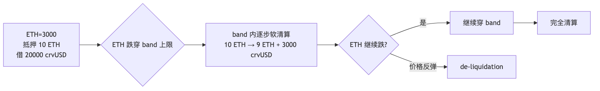
优点：避免暴跌一秒被强平。缺点：反复穿 band 的"震荡损耗"持续侵蚀抵押品——借款人本质上被 LP 化（每次反复都是给 LLAMMA 做了一笔 V3 风格 LP）。
A.5 Balancer 加权池 + Maverick + Trader Joe LB
Balancer V3 加权池：V2 $xy=k$ 推广到带权重几何平均：$\prod x_i^{w_i} = k$，$\sum w_i = 1$。取 $w_i = 1/n$ 退化回 V2。80/20 BAL/WETH = 自动再平衡指数组合，代价是 IL 比 50/50 更大。V3 改动：hooks 与池类型解耦、ERC-4626 buffer 让收益代币直接作 LP 资产。
Maverick V2 directional liquidity：LP 选 Right（跟涨）/Left（跟跌）/Both/Static 四种模式，引入 Boosted Positions 把激励代币精准发给特定 tick。
Trader Joe Liquidity Book：用离散 bin 替代连续 tick，每 bin 恒定和 x + y·P = const。滑点 O(1) 可预测；变动费率按 bin 内交易频率自适应，波动大时 LP 自动收更高费。
PancakeSwap Infinity（v4）：2025-04 发布，支持 V2/V3/Infinity hook 三种池共存，BNB Chain 上 V3 TVL ~$978M。
A.6 ve(3,3)
Andre Cronje 在 Solidly 引入，Velodrome（Optimism）、Aerodrome（Base）继承。锁仓治理代币换 veToken（time-lock NFT，锁越久权重越大）；veToken 持有人投票决定每周通胀分配；LP 拿通胀，投票人拿 100% 池子手续费——形成 贿赂市场：项目方向 ve-holder 送 bribe 换票。
(3,3) 是博弈论纳什均衡：双方合作 (3,3)，叛逃 (-1,-1)。问题：bribe 成本 > 池子真实收益时，市场负和——长期变成"通胀稀释 vs bribe 补贴"博弈。
Aerodrome 与 Velodrome 计划 2026 Q2 合并为 Aero。
Chapter 14
附录 B：借贷数学补充
主线 Ch5 讲了 HF 和清算。本附录补：jump rate 完整公式、Aave V3 + Umbrella 自动 slash、Compound III absorb/buyCollateral、Morpho Blue 五元组、Maple/Centrifuge KYC 信用。
B.1 利率曲线（jump rate 完整公式）
利用率 $U = \frac{\text{borrows}}{\text{supplies} + \text{borrows} - \text{reserves}}$。Compound 的 jump rate：
$$
\text{borrowRate}(U) = \text{base} + \text{slope}_1 \cdot \min(U, k) + \text{slope}_2 \cdot \max(0, U - k)
$$
USDC 池典型参数：base=0%、slope1=4%、kink=80%、slope2=100%。U 从 0→80% 借贷率 0→3.2%；U 从 80%→100% 借贷率 3.2%→23.2%。陡峭的 slope2 是自动稳定器。
Aave V3 差异化曲线：
| 资产类 |
kink |
slope1 |
slope2 |
| 稳定币 |
92% |
3.5% |
60% |
| 挥发资产 |
80% |
3.8% |
80% |
| Isolation 资产 |
45-60% |
7% |
300% |
e-mode：相关性高的资产对（ETH/stETH、USDC/USDT）划入同一 category，LTV 提到 93%。是 Ethena 系 Aave-Pendle 杠杆循环的基础。
Morpho AdaptiveCurve：参数自动跟踪市场出清——长时间 $U$ 偏离 target 时，曲线自动平移：
$$
r_t = r_{t-1} \cdot \exp(k \cdot (U_t - U_{\text{target}}) \cdot \Delta t)
$$
避免治理频繁调参，代价是极端市场下利率可能过冲（U 长时间高位时利率涨到 1000%+）。
B.2 Aave V3 + Umbrella 自动 slash
Aave 架构：Pool.sol 主入口；aToken（rebase 计息凭证）；Variable/Stable Debt Token；InterestRateStrategy（每 asset 独立曲线）；Aave Oracle（Chainlink + fallback）。
Umbrella（2025-06-05 上线）：替换老 Safety Module。
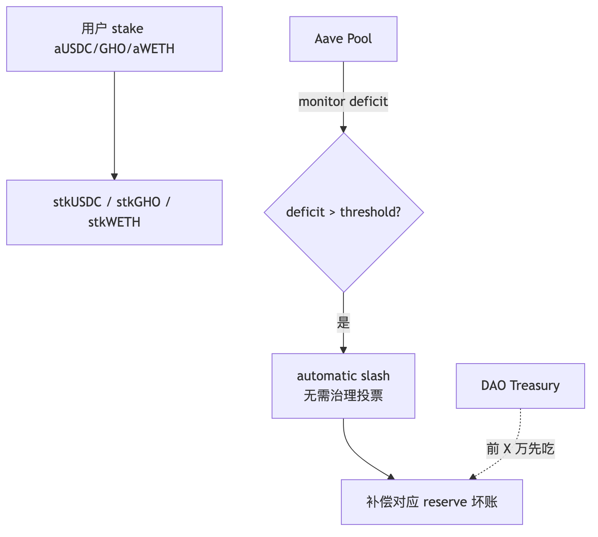
特性：① 分资产 staking（每个 staked asset 只覆盖对应 reserve）；② 自动 slash（合约阈值，超过即时 slash）；③ deficit offset（前 X 万由 Treasury 吃，超过才 slash staker）。
stkGHO/sGHO 演化（2026-04）：老 stkGHO 治理把 slash 关到 0；新 sGHO（5% APR、no slash、no cooldown）；新 stkGHO-Umbrella vault（愿意担 slash 风险）。
B.3 Compound III（Comet）单一基础资产
每市场只能借一种基础资产（cUSDCv3 等），抵押物只能存不能借——主动牺牲资本效率换安全（V2 时代 oracle/闪电贷事故的反思）。
清算分两步：
- absorb(account)：清算人调用，把坏账账户的抵押品转给协议、债务清零。
- buyCollateral(asset, baseAmount)：任何人付 baseAmount USDC，按 oracle 价 × (1 - storeFrontPriceFactor) 折价买抵押品。
function absorb(address absorber, address[] calldata accounts) external {
for (uint256 i = 0; i < accounts.length; i++) {
absorbInternal(absorber, accounts[i]);
}
}
vs Aave：Aave 一步 liquidationCall 完成、Comet 两步——后者让 oracle 异常时不会立刻把整池抽空。TVL 远小于 Aave（$3B vs $26B），换来"上线 4 年没有过 oracle 攻击"。
B.4 隔离市场：Morpho Blue / Euler V2 / Silo / Ajna
Morpho Blue 五元组：
struct MarketParams {
address loanToken; // 借款资产
address collateralToken; // 抵押资产
address oracle; // 预言机合约
address irm; // 利率模型合约
uint256 lltv; // 清算 LTV
}
Morpho Blue ~600 行，审计 8 次，无许可建市场，市场间完全隔离。复杂性外包给 MetaMorpho vault：curator（Steakhouse、Gauntlet、Re7）创建 ERC-4626 vault 在多市场间分配资金。优点是新资产立刻上线，缺点是用户选错 curator 全承担。2025 TVL 突破 $5B。
Euler V2 EVK：V1 2023-03 $197M 事件后重写。EVault（单 vault）+ EVC（让多 vault 在一笔 tx 原子访问）+ Risk steward（半治理）。internal balance tracking 防 ERC-4626 inflation attack。
Silo V2：每对资产一个 silo——存 USDC 进 ETH-silo 只能借 ETH，不接触其它 silo 风险。2025 迁到 Sonic，TVL ~$558M。
Ajna：完全无 oracle，价格由 buckets 决定（LP 自选愿意接受的价位）。无法被操纵但流动性碎片化，TVL <$50M。
B.5 链上 KYC / 机构借贷
Maple Finance：Pool Delegate（专业资管公司）做尽调和风控，KYC 用户作 LP 给 KYC 借款机构。2026-01 推出 syrupUSDC（Coinbase Base 上线，目标 Aave V3 listing），加入 Sky Ecosystem Agent Network。TVL ~$3B。
Centrifuge：把 RWA（应收账款、CLO）搬上链作为抵押品借出 DAI/USDC。2026-01 与 Lista DAO 集成 BNB Chain，APY 3.65-4.71%。
Goldfinch（无抵押贷款给新兴市场小微）、Clearpool（机构间链上借贷）、Ondo Finance（短期国债 → USDY/OUSG）。
链上私募信用累计起源 ~$33.66B（2026-04），活跃敞口 ~$18.91B。
Chapter 15
附录 C：12+ 真实事件 Postmortem
主线 Ch9 讲了 UST、Mango。本附录补其它 12 个 $50M+ 事件。
C.1 Ronin 2022-03（$625M）
5/9 multisig 桥被钓鱼私钥 + 未撤销白名单 backdoor 凑齐阈值。详见 05-智能合约安全 §7 + 附录 D.1。
C.2 Wormhole 2022-02（$326M）
Solana sysvar 校验绕过铸 120k wETH 抽走主网 ETH，Jump Crypto 自掏 $326M 补损。详见 05-智能合约安全 §10.2 + 附录 D。
C.3 Kelp DAO 2026-04（$292M）
LayerZero 1-of-1 DVN 私钥被攻陷。攻击者签发 Ethereum 侧 rsETH 铸造消息→1-of-1 DVN 验证通过→$292M rsETH 凭空铸造→抵押 Aave 借走 wETH→Aave 坏账 $196M、TVL 单日跌 $6.6B、AAVE -16%、LDO -19%（市场担心 stETH 也走 LayerZero）。
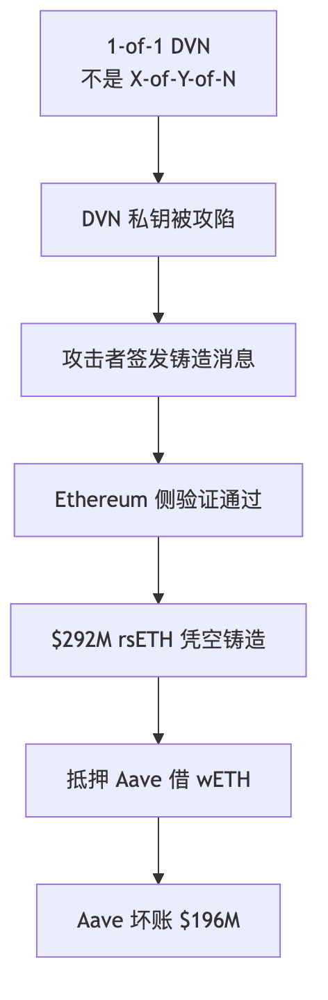
LayerZero V2 的 X-of-Y-of-N 模型应配置 2 of 3 of 5（2 必选 DVN + 5 可选中任 3 个签）。教训：① 借贷协议接受跨链资产时桥安全模型即协议安全模型；② 1-of-1 是单点；③ Umbrella 自动 slash 有上限。
C.4 （已删除）
（原描述与 DMM Bitcoin 2024-05 $305M 混淆，本案删除）
C.5 Euler V1 2023-03（$197M）
donateToReserves 没做健康检查。攻击链：① 闪电贷 30M DAI 10x 杠杆借 100M eDAI；② 调 donateToReserves(100M) 让账户突然变"deeply insolvent"；③ 用第二账户清算第一账户拿走清算折扣对应资产；④ 重复多次抽走 $197M。结局：攻击者最终归还 ~$240M（多于偷的）——团队从 OpSec 失误找到对话路径。教训：任何会让账户余额突变的函数都必须做 healthCheck。
C.6 Nomad 2022-08（$190M）
trusted root 初始化为 0x00 等于 untrusted 默认值，300 地址复制粘贴抢劫。详见 05-智能合约安全 附录 D.2。
C.7 Beanstalk 2022-04（$182M）
闪电贷 + 同区块 emergencyCommit 抽走治理国库。详见 15-DAO §6.2。
C.8 Cream 2021-10（$130M）
Cream PriceOracleProxy 把 yUSDVault.getPricePerFullShare 直接当价格；攻击者通过 deposit/withdraw 双倍化 share-price 后反复杠杆借贷，借走 $130M。教训：可被外部 donation 操纵的 share-price 不能做估值，必须用底层资产市场价 + TWAP。
C.9 Multichain 2023-07（$130M）
CEO Zhaojun 在中国被带走，电脑/手机/硬件钱包/助记词全被没收。两周后异常转账 ~$125M，CEO 妹妹也被带走（曾试图转移 ~$220M），桥永久关闭。根因：私钥控制权高度集中在 CEO 单人——事实上的中心化跨链桥。
C.10 HTX/Heco 2023-11（$100M）
操作员账户私钥泄露。
C.11 Radiant Capital 2024-10（$50M）
Arbitrum 大借贷协议。攻击链：① 假冒"前合约工"Telegram PDF 钓鱼，感染开发者 macOS；② 恶意软件篡改硬件钱包前端显示——签名时屏幕显示正常 tx，实际签恶意 tx；③ 三个多签 signer 被同样钓鱼；④ 攻击者控制 transferFrom 权限掏空用户授权资产。Mandiant 归因 UNC4736（DPRK APT）。教训：① 主机被感染时硬件钱包屏幕可被篡改；② 多签 + 地理分布仍可被同一波 APT 破；③ air-gapped 离线设备 + 二次设备验证才是更高级别防御。
C.12 Munchables 2024-03（$62M）
Blast 链 GameFi，开发团队 4 人都是同一朝鲜人，其中一个把自己余额改成 1,000,000 ETH 取出。ZachXBT 公开追踪 + 社区压力后归还全部 $62.5M。
C.13 Penpie 2024-09（$27M）
Penpie 在 Pendle 之上做收益聚合。攻击者创建伪造 Pendle Market（伪造 SY Token）→ 闪电贷资产存入伪造 SY → Penpie harvest 时伪造 SY 在 callback 里 reentrancy 进入 Penpie 自己 → 奖励账本反复更新 → 兑现 $27M。根因：Penpie 信任 Pendle 上所有市场，未验证是否治理白名单——跨协议假设破裂。
C.14 KyberSwap Elastic 2023-11（$47M）
V3-style 集中流动性 DEX。tick 边界整数舍入方向错——swap 量"几乎等于"跨过 tick 但少 1 wei 时，合约没跨 tick 但假设已经跨了，baseL 记录错远高于真实状态。攻击者反向 swap 利用错位抽走 $47M。TVL $71M → $3M，团队解散。教训：tick math 必须与 V3 reference impl 对拍 differential testing。
C.15 Curve 2023-07（$73M）
受害池：alETH/ETH ~$13.6M、msETH/ETH ~$1.6M（c0ffeebabe / Hacken 公开数据）、pETH/ETH（$11M）、CRV/ETH（$24.7M）。根因不在 Curve——Vyper 编译器 0.2.15/0.2.16/0.3.0 的 @nonreentrant 装饰器把 lock 标志和其它变量塞同一 storage slot，某些路径下 lock 失效。攻击：add_liquidity → ETH 转账 fallback → reentrancy 进入 remove_liquidity → lock 失效 → 池子状态错乱。教训：编译器/运行时/外部调用约定都是攻击面。
C.16 bZx 2020-02（~$954K）
DeFi 历史首次大规模 oracle manipulation via flash loan。bZx #1 (2020-02-15)：Compound 借 ETH → Uniswap V1 操控 wBTC/ETH 做空 wBTC，损失约 $350K；bZx #2 (2020-02-18)：Synthetix sUSD 经 Kyber/Uniswap，损失约 $645K。两次攻击不同向量。根因：用单个 DEX 现货价做 oracle。
C.17 GMX V1 2022-09（~$565K）
V1 GMX 用现货 oracle 给 perp 喂价、不收 swap fee。攻击：① thin AVAX/USDC 池子拉价；② GLP 价被推高；③ 攻击者以高价 swap AVAX 进 GLP；④ 反向操作把价拉回。V2 引入 price impact + 收 swap fee 防御。
Chapter 16
附录 O. 商户支付与 OTC 链路
主线 §2.4 讲了稳定币流通分布；本附录补"链上→链下→商户/用户"的完整支付与 OTC 工程链路（截至 2026-04）。
P.1 加密商户支付网关
| 网关 |
主打链/币 |
模式 |
商户费率 |
适用 |
| Coinbase Commerce |
BTC / ETH / USDC（多链） |
托管 + 自托管两种 |
1% |
SaaS 订阅、跨境电商、Shopify 集成 |
| BitPay |
BTC / ETH / Stablecoins |
托管 + 自动法币结算 |
1% |
实体商家（Microsoft、Newegg 经典客户） |
| Strike |
BTC（Lightning） |
Lightning 闪电网络 |
< 1% |
全球 Lightning 收款、跨境汇款（萨尔瓦多/阿根廷） |
| CryptoPro |
BTC / USDT / 多币 |
API + Telegram bot |
0.5-1% |
中小商户、零工经济、灰产边界（注意 KYC 等级） |
| OpenNode |
BTC（Lightning + on-chain） |
API-first |
1% |
开发者 + Web 应用 |
P.2 USDT-TRC20 商户场景（东南亚 / 拉美 / 非洲现实）
为什么 TRC-20 是事实标准：① gas 几乎为 0（带宽 + 能量机制）；② TRON 钱包工具齐（imToken / Tokenpocket / Trust Wallet）；③ Tether 与 Justin Sun 关系紧密、流动性最深；④ OTC 网络 9 年沉淀。
典型场景：
菲律宾家政工 → 香港雇主月薪 USDT
→ BSP 注册 OTC（Coins.ph / PDAX 转 PHP）
→ GCash 钱包 → 支付家用
拉美进口商 → 中国工厂结算
→ CNY 微信/支付宝 → C2C OTC（火币 P2P）→ TRC-20 USDT
→ 直接转工厂钱包（取代 SWIFT 节省 3-5 天 + $30 电报费）
商户收银台 SDK：① 自建（监听 TRC-20 事件 + 校验金额/时间窗）；② NowPayments / Plisio / CryptoCloud 第三方收银台（支持 100+ 币、自动结算）。
P.3 法币出入金渠道矩阵（2026-04）
| 渠道 |
类型 |
手续费 |
支持区域 |
KYC 等级 |
限额 |
| MoonPay |
On-ramp 聚合 |
1-4% |
全球 160+ 国 |
二级（身份证 + 自拍） |
$50-$50k/单 |
| Transak |
On-ramp + Off-ramp |
0.99-2.99% |
全球 150+ 国 |
二级 |
$10-$25k/单 |
| Ramp Network |
On-ramp + Off-ramp |
1-3% |
EU + 美 + 拉美 |
二级 |
€50-€75k/单 |
| Stripe Crypto |
On-ramp（USDC / SOL / ETH） |
~1.5% |
美 + 欧（合规优先） |
三级（Stripe 强 KYC） |
高 |
| Onramper |
聚合器（统一 SDK 接 25+ on-ramp） |
路由最优 |
全球 |
因子供应商而异 |
因子供应商而异 |
实战经验：① 小额（< $1k）走 MoonPay/Ramp；② 大额（> $10k）走 CEX（Coinbase/Binance/Kraken）；③ DApp 嵌入选 Onramper（一次集成多个供应商）；④ 美国合规要求高的 fintech 选 Stripe Crypto。
P.4 香港 vs 新加坡 vs 美国 入金差异
| 维度 |
香港 |
新加坡 |
美国 |
| 监管 |
HKMA + SFC（VATP 牌照） |
MAS（PSA / DPT 牌照） |
FinCEN MSB + 各州 BitLicense（NY） |
| 沙盒/试点 |
HashKey / OSL / HKVAEX 持牌 |
Coinbase / Crypto.com / Independent Reserve 持 PSA |
联邦层模糊；NY 限严，FL/TX 友好 |
| 散户准入 |
2024-08 起 ETF + 持牌交易所对零售开放 |
2022-12 后零售紧缩（禁广告、禁信用卡入金） |
全美零售可玩 ETF；DeFi 灰区 |
| 出入金通道 |
HKD ↔ 持牌 VATP；银行支持有限（汇丰/恒生选择性） |
SGD ↔ DBS / OCBC（部分支持）；Wise 通道 |
USD ↔ Coinbase / Kraken；ACH 速度快 |
| 稳定币立法 |
HKMA Stablecoin Bill 2024 |
MAS 单币种法币锚定稳定币框架 2023 |
GENIUS Act / STABLE Act 推进中 |
工程师选址决策：① 做亚太合规零售 → 香港 VATP；② 做机构 / B2B → 新加坡；③ 做 ETF / 美股投资人 → 美国（但接受 DeFi 灰区）。
Chapter 17
附录 D：衍生品（GMX / Hyperliquid / Synthetix / 期权）
主线没讲衍生品。本附录给三大流派 + 期权简介。
D.1 永续 DEX 三流派
① LP 池作为对手方 GMX V2 / HLP LP 整体扛 trader 盈亏
② 链上订单簿 Hyperliquid / dYdX trader 互为对手方
③ 合成 + 通用 vault Synthetix V3 / Aevo 用债务 vault 撮合多种衍生品
D.2 GMX V2：GM 池
LP 提供 ETH/BTC/USDC，trader 在池上做多/做空 perp，LP 是统一对手方。trader 整体亏损时 LP 赚 fee + funding；trader 整体大赚时 LP 短期"放血"。
V2 改动：每市场独立 GM 池（V1 共享 GLP 池长尾资产污染所有 LP）。Synthetic GM 池：用 BTC + USDC 抵押 pricing WIF/USD，但 WIF 自身不在池子里。Single-token GM 池（2025）：只用 BTC 或 ETH 做双向抵押，没 USDC——LP 不持机会成本，代价是自动 deleveraging（ADL）风险更高。
funding rate（dual-slope 动态调整）：
$$
\text{funding} = \text{factor} \cdot \frac{(\text{long OI} - \text{short OI})^{\text{exponent}}}{\text{total OI}}
$$
按秒迭代：每秒以 fundingIncreaseFactorPerSecond × imbalance 上调。受 maxFundingFactorPerSecond 上限约束。
LP 净收益 = fee + funding - trader PnL。trader 长期大概率亏损时 LP 赚。
D.3 Hyperliquid：HyperBFT + HIP-2/HIP-3
把 matching engine 做进共识层（不是智能合约）。HyperCore：自有 L1，HyperBFT 共识，订单簿存在状态机，价格-时间优先撮合。HyperEVM（2025-02）：同一 L1 的 EVM 兼容层，首例"原生 CLOB + EVM 双栈"。
HIP-2（Hyperliquidity）：协议在订单簿自动放 maker order，无需信任外部做市商。
HIP-3（2025-10-13）：perp 市场列表完全无许可，stake 500,000 HYPE 即可部署。第一批 3 个资产免拍卖，第 4+ 走荷兰拍。builder 选 oracle、合约规格、最大杠杆、margin、OI 上限。fee 50% 给 builder，50% 给协议。
2026 数据：累计交易额 > $25B、7.5 万+独立 trader、商品/股票/油气 perp 爆发。HLP 社区 vault OI ~$7.5B、日成交峰值 $10-15B。
D.4 dYdX v4：Cosmos appchain CLOB
订单簿在共识层，~60 个 validator 维护，DYDX 做 staking + governance。完全去中心化但 matching 性能低于 Hyperliquid。
D.5 Synthetix V3：模块化衍生品
通用化抵押 vault——任何代币都能作 margin 投入 perpetual 市场。2025-Q4 重返主网，支持 sUSDe / cbBTC / wstETH 多种 margin。
D.6 链上期权：Lyra（Derive）/ Premia
链上期权 TVL 远小于永续——瓶颈是定价精度（IV surface 实时调整）和资本效率（LP 须实时调整 vega/gamma）。Lyra 用 Black-Scholes + IV surface AMM；Premia V3 用 SVI/SSVI 参数化 vol surface oracle。Deribit（CEX 期权龙头）日成交 $50 亿+，链上所有协议加起来不到 $5000 万——差 100 倍。
Chapter 18
附录 E：Pendle PT/YT 数学
主线 Ch7 提了 Pendle 一句。本附录展开。
E.1 SY = PT + YT
任何生息资产 $A$ 都可以分解为「未来某时点的本金」+「现在到那个时点之间的利息流」。Pendle 把这一分解写成两个独立 ERC-20——PT（Principal Token）和 YT（Yield Token）。
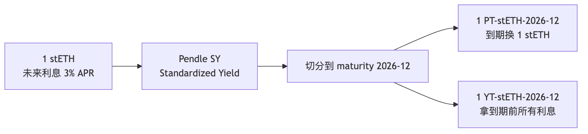
- PT：到期 1:1 兑回原始资产，相当于零息债券——当下折价买入、到期拿回本金。
- YT：拿到 maturity 前的所有利息流，押注未来利率上涨。
E.2 不变量
$$
\text{SY_value} = \text{PT_value} + \text{YT_value}
$$
任何时刻 1 SY = 1 PT + 1 YT（按价值）。
Pendle AMM 用 log-normal 曲线 + 时间衰减：PT 价格随到期日临近收敛到 1（0.97 → 1）；YT 价格随到期日临近衰减到 0（0.03 → 0）。
LP IL 来源：implied APY vs underlying APY 的偏离——市场预期与实际利率背离时 LP 在 PT/SY AMM 上的两边敞口被重新定价。类似 Uni V3 在区间外只剩单边资产，但驱动量是利率而非现货价。
E.3 实战
- 固收：买 PT-stETH-2026-12（0.95 stETH/PT），8 个月折价收益 ~5.26%、年化 ~8%（高于 stETH 自身 3%）。
- 投机：买 YT-stETH-2026-12（0.05 USDC/YT），未来 stETH 实际收益 > 5% 时盈利——本质是杠杆做多利率。
- LP：提供 PT/SY 流动性，赚交易费 + 部分 YT 收益。
E.4 2026 状态
TVL 从 2023 年 $230M → 2024 年 $4.4B（LRT 浪潮）。2026-01 升级 sPENDLE：锁定期 14 天（vs vePENDLE 4 年）；80% 协议收入买回 PENDLE 给 sPENDLE holder。
Chapter 19
附录 F：ve-tokenomics + Berachain PoL + Real Yield 辨真伪
本附录给 DeFi 视角的 ve 经济效应；治理设计 + Curve War 完整复盘见模块 15。
（与模块 15 §5/§7 重叠——本附录给 DeFi 视角，15 章给治理视角）
F.1 ve(3,3) 经济学
详见附录 A.6。Aerodrome bribe 市场流程：
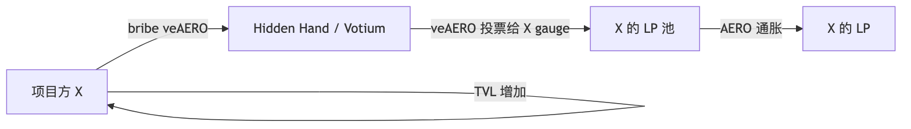
关键问题：bribe 成本 > 池子真实收益时市场负和。
F.2 Berachain Proof of Liquidity
2025-02 主网。把流动性激励和 PoS 共识绑死：
- BERA：gas + staking 代币（可转让）。
- BGT：治理 + 收益代币（soulbound 不可转让）。
机制：Validator stake BERA 提议区块 → 区块发 BGT 通胀给 Reward Vault → LP 在 RV 中存代币获 BGT → BGT 持有者 boost 验证者增加其 block reward。BGT 1:1 burn 换 BERA（单向不可逆）。
2026-03 数据：TVL ~$3.2B。PoL v2（2025 末）：33% 协议激励自动转换成 wBERA 分给 BERA staker，给 gas token "real yield"。
F.3 Real Yield vs Ponzi 三问
Real Yield：从真实业务（交易费、借贷利息、清算费）赚钱，通过 buyback/burn/staking 分给持有者。Ponzi yield：靠新发代币支付 reward，价格涨 → APR 高 → 吸引新用户 → ...直到通胀跌穿。
辨真伪三问：① Yield 来源是 emission 还是 fee revenue？看 DefiLlama "Revenue"（协议自留）而非 "Fees"（用户付出总成本）。② APR 多高？真实 yield 通常 2-15%，100%+ 几乎一定是 emission。③ 代币总供应是否在增？增意味着高 APR 是稀释购买力。
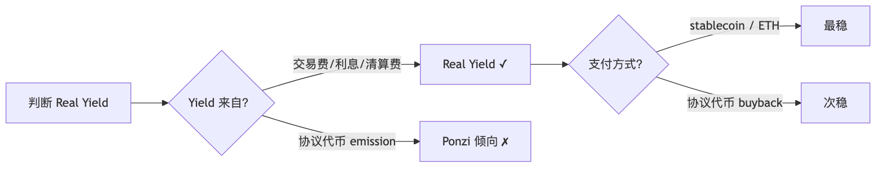
2026 趋势：协议把"Revenue 分给 token holder 比例"从 2024 年 ~5% 提到 ~15%。Uniswap fee switch 激活并 buyback + burn。
F.4 Pendle vs Convex vs Yearn
| 维度 |
Pendle |
Convex |
Yearn V3 |
| 抽象 |
PT/YT 利率切片 |
veCRV 治理聚合 |
ERC-4626 vault + curator |
| 收益来源 |
利率交易 + LP fee |
Curve emission + bribes |
多 strategy 自动复投 |
| 锁仓 |
14 天（sPENDLE） |
16 周（vlCVX） |
无 |
| 复杂度 |
高 |
中 |
低 |
Chapter 20
附录 G：Restaking 经济学
主线 Ch7 提了 LRT 一句。本附录展开 EigenLayer / Symbiotic / Karak / Babylon。
G.1 EigenLayer（始祖）
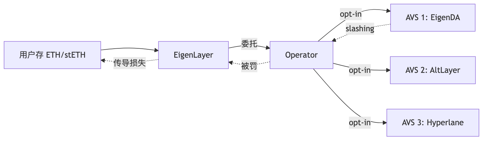
2025-04-17 slashing 上线。2026 数据：TVL ~$18-19.5B（峰值 $28.6B 后市场出清）、39+ active AVS、1900+ active operators、市占率 ~93.9%。Operator 可限制对单个 AVS 的暴露，stake 被 unique attribution 到特定 AVS。
G.2 Symbiotic
2025-01 主网。模块化竞争者。Permissionless vault（无 whitelist）；任意 ERC-20 抵押（USDC、BTC、各种 LRT）；curator（Gauntlet 等）管理 vault。
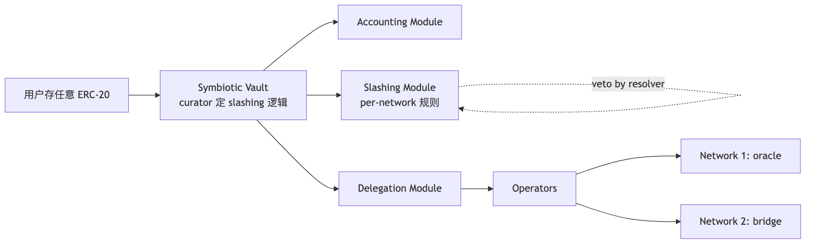
2026 状态：vault 数 70+，覆盖 oracle/DA/桥/appchain/BTC services。
G.3 Karak：Universal Restaking
Andalusia Labs 开发。任何资产都能 restake、任何网络都能受益。自带 L2（Karak L2） 把 restaking 应用直接跑在自家 L2 上。TVL ~$740M。
G.4 Babylon：BTC 原生 restaking
让 BTC 不离开比特币原链就能 stake。
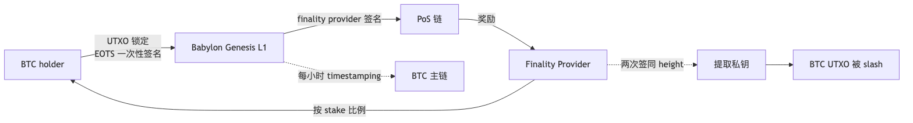
EOTS（Extractable One-Time Signature）：基于 Bitcoin Schnorr 构造的可提取一次性签名。FP 在同一 height 签两个 block，两个 Schnorr 签名能数学组合提取 FP 私钥——即 slashing。Bitcoin timestamping：Babylon 链每小时 commit 状态到 Bitcoin 主链（防 long-range attack）。
2026 状态：TVL ~$5B，BTC LST 协议 Lombard（LBTC）等大量集成。
G.5 LRT 风险盘点
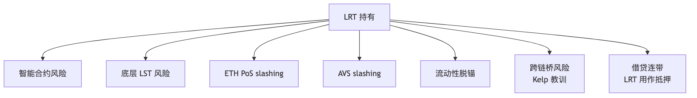
主流 LRT（2026-04）：
| 协议 |
代币 |
TVL |
特色 |
| ether.fi |
eETH/weETH |
~$3.2B（含 vault $7.8B） |
LRT 龙头，借贷接受度第一 |
| Renzo |
ezETH |
~$1-2B |
EigenLayer 重仓 |
| Kelp DAO |
rsETH |
$740M |
2026-04 桥事故 |
| Puffer |
pufETH |
~$1.3B |
"anti-slashing"，机构 mint |
| Swell |
swETH/rswETH |
~$265M |
早期 |
Chapter 21
附录 H：账户抽象 + Intent
主线没讲。本附录展开 4337 / 7702 / Permit2 / CowSwap / OIF。
H.1 ERC-4337：账户抽象
让账户可以是任意智能合约而非只能私钥签名 EOA。4337 把 AA 做在共识层之外（不改 protocol，纯应用层）：
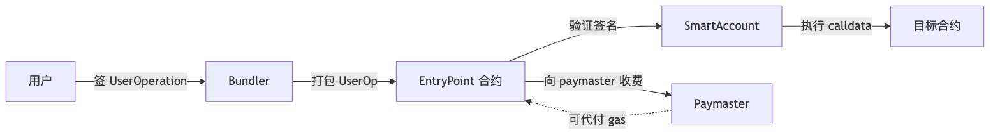
好处：社交恢复、batch 交易、第三方代付 gas、session key。代价：首次部署 SmartAccount 一次性 gas 几十美元。
H.2 EIP-7702：让 EOA 临时变 Smart Account
Pectra 升级（2025-05-07）带来。EOA 通过 Type 4 tx 签名"临时附加" smart contract 代码——不需要部署新账户、不需要迁移资产。
Circle 用 EIP-7702 + Paymaster 实现"用 USDC 付 gas"：用户从创建 EOA 那一刻起就能 gasless 交易。4337 解决新原生 smart wallet，7702 解决存量 EOA 升级——两者结合让 batch + gasless + social recovery 成为默认。
H.3 Permit / ERC-2612 / Permit2
| 标准 |
适用 |
工作方式 |
| ERC-2612 |
实现了它的 ERC-20 |
代币合约自带 permit()，EIP-712 签名授权后 transferFrom |
| Permit2 |
任意 ERC-20（含 USDT/WETH） |
一次性 approve(Permit2, MAX)，之后签消息给 dApp 短期 allowance，支持 batch + 过期 |
USDT/WETH/老 USDC 都没实现 ERC-2612，Permit2 提供统一签名层兼容所有 ERC-20。intent 系统天然依赖 Permit2 nonce + 过期机制。
H.4 Intent：从 swap 到声明
传统 swap：用户必须指定 DEX、fee tier、滑点、deadline，错一步被 sandwich。Intent：只签声明 { sell: 1000 USDC, buy: ETH (>= 0.32), deadline: ... }，Solver/Filler 网络找最优路径并保证执行价不差于下限。
CowSwap：批量拍卖 + solver 竞争
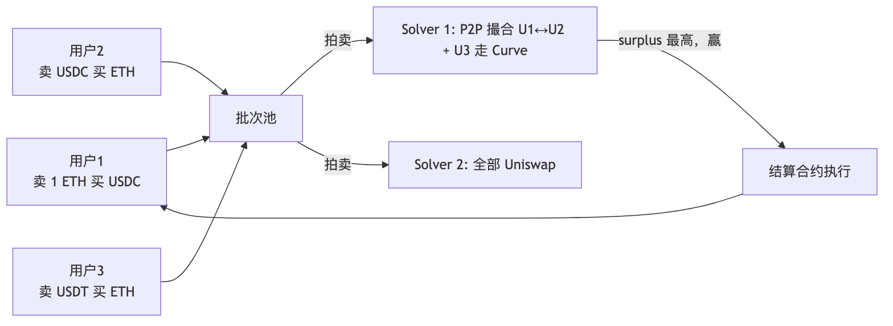
solver 经济学：① Score = surplus + protocol fee（统一记分）；② Surplus 全归用户（solver 找到比 limit 价更好的执行价，差额给用户）；③ Solver 周期奖励 COW 代币；④ Solver 担风险（出价时承诺执行价，差了要补差）。
CoW AMM：CowSwap 自家零 swap fee AMM，专给 solver 对冲库存。
UniswapX / 1inch Fusion / Bebop：filler 竞标执行，走 V3/V4 或自己库存。
H.5 跨链 intent 标准
- ERC-7521：Generalized Intent 标准。
- ERC-7683：跨链 intent 标准。
- OIF（Open Intents Framework）：EF 2025-02 联合 30+ 团队基于 7683 统一跨链 intent。
- Anoma：把整条链改造成 intent machine。
- Khalani：跑在 40+ 链的跨链 intent solver 基础设施。
Chapter 22
附录 I：DeFi 协议完整索引（2026-04 状态）
DeFi 主流协议按层 + 子类完整列出，附 TVL（2026-04 来源 DefiLlama）、链、正文章节交叉引用。
A.1 货币层（L1）
A.1.1 法币抵押稳定币
| 代币 |
发行方 |
储备 |
市值 |
交叉 |
| USDT |
Tether |
现金+短债 |
~$140B |
Ch3 |
| USDC |
Circle |
现金+短债（BlackRock 托管） |
~$60B |
Ch3 |
| FDUSD |
First Digital |
现金+国债 |
~$3B |
Ch3 |
| PYUSD |
PayPal+Paxos |
现金+国债 |
~$1.5B |
Ch3 |
| RLUSD |
Ripple |
现金+国债（NYDFS 监管） |
~$1B |
Ch3 |
| TUSD |
TrustToken |
现金+国债 |
~$500M |
Ch3 |
| USDP |
Paxos |
现金+国债 |
~$200M |
Ch3 |
| USD0 |
Usual |
RWA 国债 + USYC |
~$1.5B |
第 5 章变体 |
A.1.2 超额抵押稳定币
| 代币 |
协议 |
抵押 |
市值 |
交叉 |
| USDS / DAI |
Sky Protocol |
ETH/wstETH/RWA/USDC（PSM） |
~$9B |
Ch4 |
| LUSD / BOLD |
Liquity V1/V2 |
ETH（V1）/wstETH/rETH（V2） |
~$300M |
Ch4 |
| GHO |
Aave |
Aave 抵押品 |
~$300M |
Ch4 |
| crvUSD |
Curve |
wstETH/sfrxETH/WBTC（LLAMMA bands） |
~$200M |
Ch4/9 |
| eUSD |
Lybra |
stETH/wstETH |
~$50M |
Ch4 |
A.1.3 合成 / RWA / 算法
| 代币 |
协议 |
模型 |
市值 |
交叉 |
| USDe / sUSDe |
Ethena |
delta-neutral 现货+永续空头 |
~$6B |
Ch5 |
| iUSDe |
Ethena |
机构合规版 USDe |
增长中 |
Ch5 |
| frxUSD / sfrxUSD |
Frax V3 |
RWA（BUIDL）+ AMO |
~$1B |
Ch5 |
| USDM |
Mountain |
100% 短期国债 + rebase |
~$300M |
Ch5 |
| USDY / OUSG |
Ondo |
短期国债 / 机构国债 |
~$700M |
Ch5 |
| USYC |
Hashnote |
机构国债 |
~$1B |
Ch5 |
| BUIDL |
BlackRock |
tokenized money-market |
~$3B |
Ch5 |
| syrupUSDC |
Maple |
私募信用收益 |
~$200M |
Ch17 |
A.1.4 LST（Liquid Staking Token）
| 代币 |
协议 |
模式 |
TVL |
交叉 |
| stETH / wstETH |
Lido |
rebase / wrap |
~$23B |
Ch22 |
| rETH |
Rocket Pool |
汇率递增 |
~$2-3B |
Ch22 |
| cbETH |
Coinbase |
汇率递增 |
~$1B |
Ch22 |
| sfrxETH |
Frax |
双代币 |
<$1B |
Ch22 |
| mETH |
Mantle |
汇率递增 |
~$1B+ |
Ch22 |
| osETH |
StakeWise |
用户跑节点 |
~$300M |
Ch22 |
A.1.5 LRT（Liquid Restaking Token）
| 代币 |
协议 |
TVL |
状态 |
交叉 |
| eETH / weETH |
ether.fi |
~$3.2B |
龙头 |
Ch24 |
| ezETH |
Renzo |
~$1-2B |
EigenLayer 重仓 |
Ch24 |
| pufETH |
Puffer |
~$1.3B |
Anchorage 集成机构 |
Ch24 |
| rsETH |
Kelp DAO |
$740M |
2026-04 桥被攻击 |
Ch24 |
| swETH / rswETH |
Swell |
~$265M |
早期 LRT |
Ch24 |
A.1.6 BTC 上链
| 代币 |
模式 |
信任 |
TVL |
交叉 |
| WBTC |
BitGo 托管 |
中心化 |
~$10B |
Ch2 |
| cbBTC |
Coinbase 托管 |
中心化 |
~$3B |
Ch2 |
| tBTC |
threshold ECDSA 51 节点 |
多签 |
~$500M |
Ch2 |
| FBTC |
Antalpha+Mantle |
托管 |
~$1B |
Ch2 |
| LBTC |
Lombard + Babylon |
restaked BTC |
~$1.5B |
Ch2/23 |
| uniBTC |
Bedrock + Babylon |
restaked BTC |
~$300M |
Ch23 |
| solvBTC |
Solv |
多托管 |
~$700M |
Ch2 |
A.2 交易层（L2 DEX）
A.2.1 AMM（EVM）
| DEX |
模型 |
主链 |
TVL |
交叉 |
| Uniswap V4 |
singleton + hooks |
Eth/Base/Arb/多链 |
~$5B |
Ch8 |
| Uniswap V3 |
集中流动性 NFT |
Eth + 多链 |
~$3B |
Ch7 |
| Uniswap V2 |
xy=k |
Eth + 多链 |
~$1B |
Ch6 |
| Curve |
StableSwap + crvUSD |
Eth + 多链 |
~$2B（按 DefiLlama 当前值复核——半衰期 90 天） |
Ch9 |
| Balancer V3 |
加权池 + hooks |
Eth + 多链 |
~$1B |
Ch10 |
| PancakeSwap Infinity |
V2/V3/V4 hybrid |
BNB + 多链 |
~$1B |
Ch10 |
| Aerodrome |
ve(3,3) |
Base |
~$1.5B |
Ch11 |
| Velodrome |
ve(3,3) |
Optimism |
~$300M |
Ch11 |
| Maverick V2 |
directional liquidity |
Eth/Arb/Base |
~$200M |
Ch10 |
| Trader Joe LB |
bin 离散流动性 |
Avalanche/Arb/BNB |
~$200M |
Ch10 |
| Camelot |
V2 fork + V3 nitro |
Arbitrum |
~$100M |
A.2 |
| Ramses |
Solidly fork |
Arbitrum |
~$50M |
A.2 |
| Bunni v2 |
Uniswap V4 hook |
Eth |
~$500M |
Ch8/11 |
| Angstrom |
V4 hook + ASS MEV 防御 |
Eth |
增长中 |
Ch8 |
A.2.2 DEX（Solana）
| DEX |
模型 |
TVL |
交叉 |
| Jupiter |
DEX 聚合器 + JLP perp |
~$2B+ |
A.2 |
| Orca |
Whirlpools 集中流动性 |
~$300M |
A.2 |
| Phoenix |
极简订单簿 |
~$50M |
A.2 |
| Drift |
vAMM + JIT + 订单簿 |
$250M（hack 后） |
Ch20 |
| Raydium |
V3 + 增长中 |
~$1B |
A.2 |
A.2.3 Intent / 聚合器
| 协议 |
模型 |
交叉 |
| CowSwap |
批量拍卖 + solver 竞争 |
Ch27 |
| UniswapX |
filler 网络 |
Ch27 |
| 1inch Fusion |
1inch intent 模式 |
Ch27 |
| Bebop |
RFQ + intent |
Ch27 |
| Anoma |
intent-centric L1 |
Ch27 |
| Khalani |
跨链 intent solver |
Ch27 |
A.3 信用 / 衍生品层（L3）
A.3.1 借贷
| 协议 |
模式 |
TVL |
交叉 |
| Aave V3 + Umbrella |
共享池 + 自动 slash |
~$26B（4 月跌至 $20B） |
Ch14 |
| Spark / SparkLend |
Aave V3 fork（Sky） |
~$3.25B + $5.24B liquidity layer |
Ch4/17 |
| Compound III (Comet) |
单一基础资产 |
~$3B |
Ch15 |
| Morpho Blue + MetaMorpho |
隔离市场 + curator |
~$5B |
Ch16 |
| Euler V2 |
Euler Vault Kit |
~$1B |
Ch16 |
| Silo V2 |
风险隔离 silo |
~$558M（Sonic） |
Ch16 |
| Ajna |
无 oracle |
<$50M |
Ch16 |
| Venus |
BNB Chain 龙头 |
~$1.5B |
A.3 |
| Radiant |
Arbitrum（重建中） |
<$100M |
Ch28 |
| Kamino Lend |
Solana |
~$3.2B |
A.3/17 |
| Save Finance（前 Solend） |
Solana |
~$300M |
A.3 |
| Maple |
链上信用 KYC |
~$3B |
Ch17 |
| Centrifuge |
RWA tokenization |
~$700M |
Ch17 |
| Goldfinch |
新兴市场无抵押贷款 |
~$100M |
Ch17 |
| Clearpool |
机构 P2P 借贷 |
~$300M |
Ch17 |
A.3.2 永续
| 协议 |
模型 |
TVL/OI |
交叉 |
| Hyperliquid |
HyperBFT + HIP-2/HIP-3 |
OI $7.5B / 日 $10-15B |
Ch20 |
| GMX V2 |
GM 池 LP 对手方 |
~$500M TVL |
Ch19 |
| dYdX v4 |
Cosmos appchain CLOB |
~$300M |
Ch20/21 |
| Synthetix V3 |
模块化抵押 + perp |
~$200M |
Ch21 |
| Drift |
Solana vAMM+JIT+CLOB |
$250M（hack 后） |
Ch20 |
| Jupiter Perps |
Solana JLP |
~$1B |
A.2 |
| Aevo |
OP Stack L2 perp+option |
OI $15M / TVL $22M |
Ch21 |
| Vertex |
Arbitrum hybrid |
~$100M |
A.3 |
| Aster |
新 perp DEX |
$3B OI |
Ch20 |
| Lighter |
新 perp DEX |
增长中 |
Ch20 |
A.3.3 期权
| 协议 |
模型 |
交叉 |
| Lyra（Derive） |
AMM + IV surface |
Ch21 |
| Premia V3 |
SVI/SSVI vol surface oracle |
Ch21 |
| Aevo |
永续 + 期权综合 |
Ch21 |
| Dopex |
链上期权 vault |
Ch21 |
| Panoptic |
LP-as-perpetual-options（基于 Uniswap V3） |
A.3 |
A.4 收益 / 策略 / 利率市场（L4）
| 协议 |
类别 |
交叉 |
| Yearn V3 |
ERC-4626 vault + curator |
Ch25 |
| Beefy |
多链自动复利 vault |
A.4 |
| Convex |
Curve veCRV 聚合 |
Ch25 |
| Aura |
Balancer veBAL 聚合 |
Ch25 |
| Pendle |
PT/YT 利率切片 + sPENDLE |
Ch25 |
| Sommelier |
Cosmos vault DAO |
A.4 |
| Sky Savings (sUSDS) |
RWA 收益 ERC-4626 |
Ch4 |
| sGHO |
Aave 原生 USD savings |
Ch14 |
A.5 再质押 / Restaking
| 协议 |
模型 |
TVL |
交叉 |
| EigenLayer |
ETH+LST → AVS |
~$18-19.5B |
Ch23 |
| Symbiotic |
permissionless vault |
$5B+ |
Ch23 |
| Karak |
universal restaking + L2 |
~$740M |
Ch23 |
| Babylon |
BTC native staking |
~$5B |
Ch23 |
| Jito (Solana) |
SOL restaking |
~$2B |
Ch23 |
A.6 预言机
| 协议 |
模式 |
交叉 |
| Chainlink Data Feeds |
push（heartbeat + 偏离阈值） |
Ch18 |
| Chainlink Data Streams |
pull（low-latency） |
Ch18 |
| Pyth Network |
pull（Pythnet 400ms 推） |
Ch18 |
| RedStone |
push + pull 模块化 |
Ch18 |
| API3 |
first-party oracle |
Ch18 |
| Switchboard |
Solana 多源 oracle |
Ch18 |
| Tellor |
optimistic 拆解 |
A.6 |
| UMA |
optimistic oracle |
A.6 |
A.7 跨链 / Bridge
| 协议 |
模型 |
交叉 |
| LayerZero V2 |
endpoint + DVN + executor |
Ch24 |
| Wormhole |
guardian 多签 |
Ch28 |
| CCIP（Chainlink） |
DON + CCIP |
A.7 |
| Axelar |
Cosmos appchain + bridge |
A.7 |
| Hyperlane |
permissionless bridge |
A.7 |
| Connext / Across |
optimistic bridge |
A.7 |
| Stargate |
LayerZero 之上 |
A.7 |
| deBridge |
intent 跨链 |
A.7 |
A.8 MEV 基础设施
| 角色 |
项目 |
交叉 |
| Relay |
Flashbots / bloXroute / Eden / Manifold |
Ch26 |
| Builder |
Beaverbuild / Titan / rsync / BuilderNet（去中心化） |
Ch26 |
| Searcher 工具 |
mev-rs / simple-arbitrage / Foundry fork |
Ch26 |
| 去中心化 builder |
BuilderNet（TEE） |
Ch26 |
| 跨链 MEV |
SUAVE |
Ch26 |
| Solana MEV |
Jito |
Ch26 |
Chapter 23
附录 J：Foundry 实战指南骨架
最小 Foundry 模板。完整代码在 code/ 目录。
B.1 安装与基础
# 安装 foundry（一次性）
curl -L https://foundry.paradigm.xyz | bash
foundryup
# 创建新项目
forge init my-defi-project
cd my-defi-project
# 安装常用依赖
forge install OpenZeppelin/openzeppelin-contracts
forge install Uniswap/v3-periphery
forge install aave-dao/aave-v3-origin
forge install transmissions11/solmate
forge install foundry-rs/forge-std
B.2 foundry.toml 推荐配置
[profile.default]
src = "src"
out = "out"
libs = ["lib"]
solc_version = "0.8.28"
optimizer = true
optimizer_runs = 20000
via_ir = false
fs_permissions = [{ access = "read", path = "./" }]
gas_reports = ["*"]
[rpc_endpoints]
mainnet = "${MAINNET_RPC_URL}"
arbitrum = "${ARB_RPC_URL}"
base = "${BASE_RPC_URL}"
[etherscan]
mainnet = { key = "${ETHERSCAN_API_KEY}" }
arbitrum = { key = "${ARBISCAN_API_KEY}" }
[fmt]
line_length = 120
tab_width = 4
bracket_spacing = false
B.3 fork mainnet 测试模板
// test/Fork.t.sol
// SPDX-License-Identifier: MIT
pragma solidity 0.8.28;
import {Test} from "forge-std/Test.sol";
import {IPool} from "@aave/v3-core/contracts/interfaces/IPool.sol";
contract ForkTest is Test {
IPool public aavePool = IPool(0x87870Bca3F3fD6335C3F4ce8392D69350B4fA4E2);
function setUp() public {
vm.createSelectFork(vm.envString("MAINNET_RPC_URL"), 19500000);
}
function test_AaveV3_Supply() public {
address user = makeAddr("user");
vm.startPrank(user);
// ...
}
}
跑：
forge test --match-contract Fork --fork-url $MAINNET_RPC_URL --fork-block-number 19500000 -vvv
B.4 Invariant 测试（防 inflation attack）
// test/Invariant.t.sol
contract InvariantTest is Test {
MyVault vault;
function setUp() public {
vault = new MyVault(asset);
targetContract(address(vault));
}
function invariant_AssetsGteShares() public view {
if (vault.totalSupply() == 0) return;
// 不变量：totalAssets / totalSupply 单调上限（用 virtual offset 后）
assertGe(vault.totalAssets(), 1);
}
}
forge test --match-contract Invariant -vvv
B.5 gas 对比
# 跑测试时记录 gas 快照
forge snapshot
# 与上次 commit 对比
forge snapshot --diff
B.6 部署到 testnet
forge script script/Deploy.s.sol \
--rpc-url $SEPOLIA_RPC_URL \
--broadcast \
--verify
B.7 常用 cheatcode
| Cheatcode |
用途 |
vm.prank(addr) |
单次模拟 addr 调用 |
vm.startPrank(addr) / vm.stopPrank() |
持续模拟 addr |
vm.warp(timestamp) |
时间穿越 |
vm.roll(blockNumber) |
块号穿越 |
deal(token, addr, amount) |
给 addr 凭空注入 token |
vm.expectRevert(bytes) |
预期 revert |
vm.recordLogs() / vm.getRecordedLogs() |
记录 event |
vm.createSelectFork(url, block) |
fork 切换 |
详见 code/ 目录的具体项目。
Chapter 24
附录 K：DeFi 速查图（一页打印版）
┌─────────────────────────────────────────────────────────────┐
│ DeFi 协议栈速查图 │
├─────────────────────────────────────────────────────────────┤
│ L4 策略层 │
│ Yearn V3 │ Pendle PT/YT │ Convex │ Aura │ Beefy │
├─────────────────────────────────────────────────────────────┤
│ L3 信用/衍生品 │
│ 借贷：Aave V3+Umbrella │ Compound III │ Morpho │ Spark │ │
│ Euler V2 │ Silo │ Maple │ Centrifuge │
│ 永续：Hyperliquid HIP-3 │ GMX V2 │ dYdX v4 │ Synthetix V3 │
│ 期权：Lyra │ Premia V3 │ Aevo │
├─────────────────────────────────────────────────────────────┤
│ L2 交易层 │
│ AMM：UniV2/V3/V4 │ Curve │ Balancer V3 │ PancakeSwap │
│ Aerodrome │ Maverick V2 │ Trader Joe LB │
│ 订单簿：Hyperliquid │ dYdX v4 │ Drift │ Phoenix │
│ Intent：CowSwap │ UniswapX │ 1inch Fusion │ Bebop │
├─────────────────────────────────────────────────────────────┤
│ L1 货币层 │
│ 原生：ETH/WETH │ BTC（WBTC/cbBTC/tBTC/LBTC） │
│ 稳定币：USDC/USDT/USDS/USDe/Frax/LUSD/GHO/crvUSD/USDM │
│ LST：stETH/rETH/cbETH/sfrxETH/mETH │
│ LRT：eETH/ezETH/pufETH/rsETH/swETH │
├─────────────────────────────────────────────────────────────┤
│ 横切：MEV/账户/预言机 │
│ MEV：Flashbots │ MEV-Boost │ BuilderNet │ SUAVE │ Jito │
│ 账户：ERC-4337 │ EIP-7702 │ Permit2 │
│ 预言机：Chainlink │ Pyth │ RedStone │ API3 │
│ Restake：EigenLayer │ Symbiotic │ Karak │ Babylon │
└─────────────────────────────────────────────────────────────┘
关键 2026 时间节点：
- 2025-01-30 Uniswap V4 主网
- 2025-02 Berachain 主网
- 2025-04-17 EigenLayer slashing 上线
- 2025-05-07 Pectra（EIP-7702）
- 2025-06-05 Aave Umbrella
- 2025-10-13 Hyperliquid HIP-3
- 2026-01 Pendle sPENDLE / Jupiter JupUSD / yvUSD
- 2026-04-07 DAI → USDS 大规模迁移
- 2026-04-18 Kelp DAO bridge 事件 / Aave $6.6B TVL drop
Chapter 25
附录 L：术语小词典
| 术语 |
全称 |
解释 |
| AMM |
Automated Market Maker |
自动做市商 |
| AMO |
Algorithmic Market Operations |
Frax 的协议级"中央银行公开市场操作" |
| AVS |
Actively Validated Service |
EigenLayer/Symbiotic 上的应用服务 |
| CDP |
Collateralized Debt Position |
抵押债务头寸 |
| CLOB |
Central Limit Order Book |
中央限价订单簿 |
| DVN |
Decentralized Verifier Network |
LayerZero V2 验证者网络 |
| EOTS |
Extractable One-Time Signature |
Babylon BTC slashing 数学基础 |
| HF |
Health Factor |
健康因子（借贷协议） |
| IL |
Impermanent Loss |
无常损失 |
| IRM |
Interest Rate Model |
利率模型 |
| JIT |
Just-In-Time（liquidity） |
即时流动性 |
| LRT |
Liquid Restaking Token |
流动性再质押代币 |
| LST |
Liquid Staking Token |
流动性质押代币 |
| LT |
Liquidation Threshold |
清算阈值 |
| LTV |
Loan-To-Value |
贷款价值比 |
| LLAMMA |
Lending-Liquidating AMM |
crvUSD 软清算 AMM |
| MEV |
Maximal Extractable Value |
最大可提取价值 |
| OFT |
Omnichain Fungible Token |
LayerZero V2 跨链代币标准 |
| PBS |
Proposer-Builder Separation |
出块者-构建者分离 |
| PoL |
Proof of Liquidity |
Berachain 的共识 |
| PSM |
Peg Stability Module |
DAI/USDS 锚定稳定模块 |
| PT/YT |
Principal/Yield Token |
Pendle 利率切片 |
| RWA |
Real World Asset |
现实世界资产 |
| SBC |
Single Base Asset Compound |
Compound III 单一基础资产模型 |
| SSR |
Sky Savings Rate |
Sky 协议储蓄利率 |
| SUAVE |
Single Unifying Auction for Value Expression |
Flashbots 下一代 |
| TWAP |
Time-Weighted Average Price |
时间加权平均价 |
| TVL |
Total Value Locked |
锁仓总价值 |
| ve |
vote-escrowed |
Curve 引入的锁仓投票模型 |
Chapter 26
附录 M：学习路径与项目案例
E.1 三周学习计划
第 1 周：货币层 + AMM 基础
- Day 1-2：精读 Ch1-5（货币层全集）
- Day 3-4：精读 Ch6-7（V2/V3 数学）+ 跑 code/univ2-pool/
- Day 5：跑 Uniswap V3 Book 第 1-3 章
- Day 6-7：精读 Ch8-11（V4/Curve/Balancer/ve3,3）+ 自己 fork 一个 V4 hook 模板
第 2 周：借贷 + 衍生品
- Day 8-9：精读 Ch12-13（利率 + HF）+ 跑 code/chainlink-liquidator/
- Day 10-11：精读 Ch14-17（Aave/Compound/Morpho/机构借贷）+ 在 Aave 主网 fork 上做一笔模拟杠杆循环
- Day 12：精读 Ch18（Oracle）+ 复现 Cream/Mango 攻击 PoC（教学版）
- Day 13-14：精读 Ch19-21（永续/期权）+ 在 Hyperliquid testnet 部署一个简单 perp 市场（HIP-3 模拟）
第 3 周：再质押 + MEV + 风险
- Day 15-16：精读 Ch22-25（LST/Restaking/LRT/Pendle/Berachain）
- Day 17-18：精读 Ch26-27（MEV / AA / Intent）+ 跑 code/sandwich-sim/（仅本地）
- Day 19-20：精读 Ch28（事故复盘）——挑 3 个 $50M+ 事件画详细攻击链
- Day 21：思考题全做，回顾 12 大事故根因
E.2 三个练手项目
项目 1（入门）：fork 一个 UniswapV2 + 集成自家 hook
- 目标：理解 V2 PUSH 模式、flash swap、MINIMUM_LIQUIDITY。
- 时间：1 周。
- 产出：完整 Foundry 测试 + 与官方 V2 gas 对比报告。
项目 2（中级）：写一个 Aave V3 清算 bot
- 目标：理解 HF、Chainlink staleness、闪电贷 callback、私有 RPC。
- 时间：2 周。
- 产出：fork mainnet 实测能复现历史清算 + 24h dry-run 统计成功率。
项目 3（高级）：写一个 V4 Hook 实现 dynamic fee
- 目标：理解 V4 PoolManager + transient storage + hook 地址前缀编码。
- 时间：3-4 周。
- 产出：发布到 testnet、跑 invariant 测试、写 medium 文章总结。
E.3 长期成长路径

每条路径需要的能力栈：
- Protocol Designer：博弈论、机制设计、宏观货币学。
- Auditor：形式化验证（Certora/Halmos）、模糊测试、漏洞模式数据库。
- Risk Researcher：agent-based simulation、ML、金融工程。
- MEV Searcher / Researcher：Rust + EVM、低延迟系统、区块链网络协议。
E.4 推荐项目源码精读列表
按"由简到繁"顺序：
1. WETH9（~60 行）：理解 ERC-20 wrap 模式。
2. UniswapV2Pair（~250 行）：理解 PUSH 模式 + flash swap + TWAP。
3. MakerDAO Vat.sol（~500 行）：理解 CDP 核心账本。
4. Liquity TroveManager.sol（~1500 行）：理解极简 CDP 设计。
5. Compound III Comet.sol（~1500 行）：理解 single-base-asset 借贷。
6. Morpho Blue Morpho.sol（~600 行）：理解极简借贷原语。
7. UniswapV3Pool（~1000 行 + 多个库）：理解集中流动性、tick math。
8. UniswapV4 PoolManager.sol（~2000 行）：理解 singleton + flash accounting + hooks。
9. Aave V3 Pool.sol（~3000 行 + 多个 facet）：理解共享池 + e-mode + reserve。
10. EigenLayer 核心合约：理解 restaking + AVS + slashing。
E.5 常见误区
误区 1：TVL = 协议价值——TVL 只是"用户押了多少钱"，不是协议年收入。真实价值看 Revenue / Fees / FDV 三个比例。
误区 2：ZK = 隐私 = 安全——ZK 能用于隐私也能用于扩容（rollup）。ZK rollup 安全性依赖 trusted setup 和 prover 实现正确性。
误区 3：audit 通过 = 安全——审计只降低 known bug 概率。真实安全靠审计 + 形式化验证 + bug bounty + invariant fuzzing + 长期市场考验。
误区 4：multisig 5/9 = 去中心化——Ronin 教训：5/9 multisig 被 social engineering 时仍单点崩溃。真去中心化看 threshold + 地理分布 + 设备分布 + 操作流程。
误区 5：stablecoin 都一样——USDC（合规）≠ USDT（亚洲流通）≠ DAI（CDP）≠ USDe（合成）。选错稳定币等于把协议押在错误对手方风险上。
E.6 中文 DeFi 资源精选
社区与学习：
- Web3Caff Research：中文研究文章质量较高，覆盖协议研究 + 经济模型分析。
- PANews、ChainCatcher、WuBlockchain：行业新闻 + 事故复盘第一时间。
- 登链社区（learnblockchain.cn）：Solidity / 智能合约中文教程。
- WTF Academy：DeFi 教程精炼，适合从 Solidity 切入 DeFi。
研究与数据：
- 0xJin / DeFi 之道：DeFi 中文研究博客代表。
- OKX Research、Binance Research：交易所研究部门，覆盖度广。
- Footprint Analytics、KaitoAI：链上数据分析中文支持。
实战社群：
- 各大公链官方中文 Telegram / Discord（Aptos/Sui/Sei/Berachain 都有中文社区）。
- 登链开发者大会、ETHGlobal hackathon（每年 5+ 场）。
E.7 一份好的 DeFi 协议代码 review checklist
读源码时按这个清单过：
□ 1. 协议属于 L1/L2/L3/L4 哪一层？对下层做什么假设？
□ 2. 有可升级合约吗？谁有 upgrade key？timelock 多久？
□ 3. Oracle 用什么？心跳多长？有 fallback 吗？
□ 4. 每个外部调用有 reentrancy 保护吗？依赖什么编译器？
□ 5. ERC-4626 vault 怎么防 inflation attack？dead share / virtual offset / internal balance 三选一？
□ 6. 抵押品类 LT/LB 怎么定？谁有权改？
□ 7. 有跨链桥依赖吗？X-of-Y-of-N 配置如何？
□ 8. 治理代币 timelock 多长？有没有 ve 锁仓？
□ 9. fee/profit 流向哪里？是 real yield 还是 emission？
□ 10. 有 slashing 机制吗？slash 阈值由谁触发？
每项写 1-2 行短笔记，10 项过完可在 30 分钟内白板讲清这个协议。